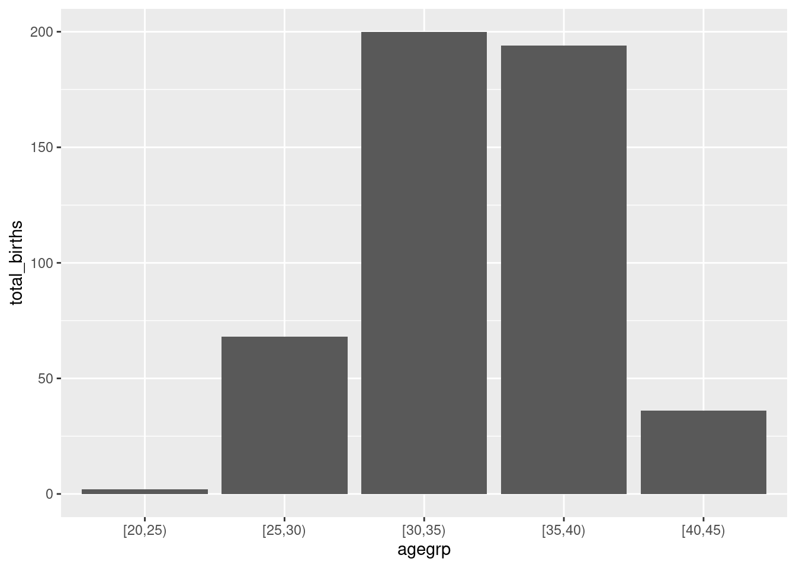
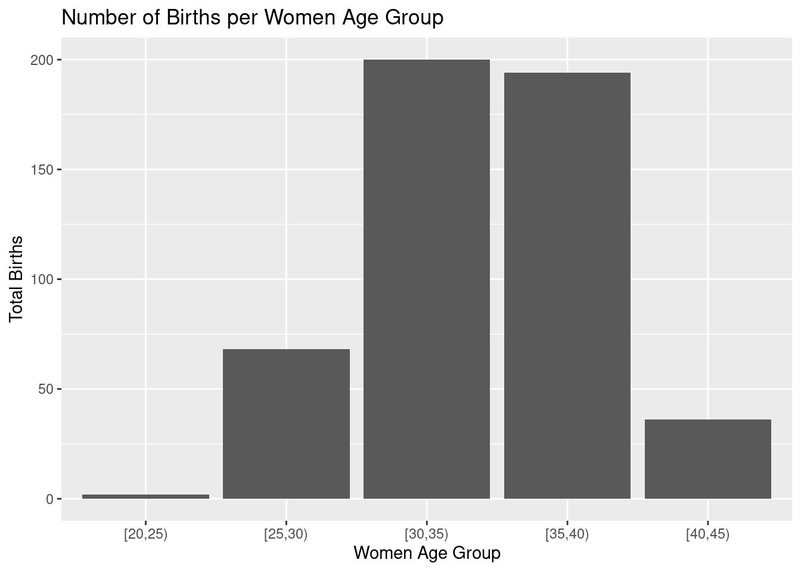

Chapter 3 Data manipulation with tidyverse
3.1 Introduction
In this chapter we will produce more or less the same outputs than in chapter 1.2 and 1.4 using
tidyverse packages framework.
The main objective of this exercise is to get familiar you with some of the main tidyverse features.
This is an optional practical for participants having already good basic R skills.
> All the rest of the course can be done without knowledge of tidyverse.
3.2 The births data
We will work with births data-set from Epi package.
First of all, load the Epi and tidyverse packages.
Then load the births data-set.
You can type ?birth in the R console to get a description of the birth data-set. (Alternatively, you can refer to chapter 1.3.2)
3.3 tibble vs data.frame
Most dplyr functions outputs return tibble object instead of
data.frame.
Inspect the class and characteristics of the births object.
## [1] "data.frame"## id bweight lowbw gestwks preterm matage hyp sex
## 1 1 2974 0 38.52 0 34 0 2
## 2 2 3270 0 NA NA 30 0 1
## 3 3 2620 0 38.15 0 35 0 2
## 4 4 3751 0 39.80 0 31 0 1
## 5 5 3200 0 38.89 0 33 1 1
## 6 6 3673 0 40.97 0 33 0 2Note: As any R object this can be summarized using str function.
## 'data.frame': 500 obs. of 8 variables:
## $ id : num 1 2 3 4 5 6 7 8 9 10 ...
## $ bweight: num 2974 3270 2620 3751 3200 ...
## $ lowbw : num 0 0 0 0 0 0 0 0 0 0 ...
## $ gestwks: num 38.5 NA 38.2 39.8 38.9 ...
## $ preterm: num 0 NA 0 0 0 0 0 0 0 0 ...
## $ matage : num 34 30 35 31 33 33 29 37 36 39 ...
## $ hyp : num 0 0 0 0 1 0 0 0 0 0 ...
## $ sex : num 2 1 2 1 1 2 2 1 2 1 ...births object is a 500 x 8 data.frame.
Let’s convert births to tibble format with as_tibble function.
## [1] "tbl_df" "tbl" "data.frame"## # A tibble: 500 × 8
## id bweight lowbw gestwks preterm matage hyp sex
## <dbl> <dbl> <dbl> <dbl> <dbl> <dbl> <dbl> <dbl>
## 1 1 2974 0 38.5 0 34 0 2
## 2 2 3270 0 NA NA 30 0 1
## 3 3 2620 0 38.2 0 35 0 2
## 4 4 3751 0 39.8 0 31 0 1
## 5 5 3200 0 38.9 0 33 1 1
## 6 6 3673 0 41.0 0 33 0 2
## 7 7 3628 0 42.1 0 29 0 2
## 8 8 3773 0 40.2 0 37 0 1
## 9 9 3960 0 42.0 0 36 0 2
## 10 10 3405 0 39.3 0 39 0 1
## # ℹ 490 more rows## Rows: 500
## Columns: 8
## $ id <dbl> 1, 2, 3, 4, 5, 6, 7, 8, 9, 10, 11, 12, 13, 14, 15, 16, 17, 18,…
## $ bweight <dbl> 2974, 3270, 2620, 3751, 3200, 3673, 3628, 3773, 3960, 3405, 40…
## $ lowbw <dbl> 0, 0, 0, 0, 0, 0, 0, 0, 0, 0, 0, 0, 0, 0, 0, 0, 0, 0, 0, 0, 0,…
## $ gestwks <dbl> 38.52, NA, 38.15, 39.80, 38.89, 40.97, 42.14, 40.21, 42.03, 39…
## $ preterm <dbl> 0, NA, 0, 0, 0, 0, 0, 0, 0, 0, 0, 0, 0, 0, 0, 0, 0, 0, 0, 0, 0…
## $ matage <dbl> 34, 30, 35, 31, 33, 33, 29, 37, 36, 39, 37, 35, 38, 34, 28, 38…
## $ hyp <dbl> 0, 0, 0, 0, 1, 0, 0, 0, 0, 0, 0, 0, 0, 0, 0, 0, 0, 0, 0, 0, 0,…
## $ sex <dbl> 2, 1, 2, 1, 1, 2, 2, 1, 2, 1, 1, 2, 2, 1, 2, 1, 2, 1, 2, 2, 2,…You can see that tibble objects inherits from data.frame which implies that all functions
working with data.frame objects will work with tibble. The opposite is
not necessary true. tibble has a couple of extra features compared to classical
data.frame. One of them is a slightly more user-friendly console print. The main
difference is probably that tibble objects supports grouping/nesting features.
Some examples we be done will see latter on.
3.4 Piping functions
This is one of the most popular features of tidyverse grammar. It enables function chaining in
R. Function output is transparently passed as input to the next function and so on.
It can help to make the code more comprehensive and readable.
Here is an example of classic vs piped functions.
## id bweight lowbw gestwks preterm matage hyp sex
## 1 1 2974 0 38.52 0 34 0 2
## 2 2 3270 0 NA NA 30 0 1
## 3 3 2620 0 38.15 0 35 0 2
## 4 4 3751 0 39.80 0 31 0 1## id bweight lowbw gestwks preterm matage hyp sex
## 1 1 2974 0 38.52 0 34 0 2
## 2 2 3270 0 NA NA 30 0 1
## 3 3 2620 0 38.15 0 35 0 2
## 4 4 3751 0 39.80 0 31 0 1Note: By default the chained object is given as the first argument to the following
function.
You can use . if this is not the case. This trick works only with dplyr pipe %>%
Here is a dummy example where we do not give the first argument to head function but the second one.
## id bweight lowbw gestwks preterm matage hyp sex
## 1 1 2974 0 38.52 0 34 0 2
## 2 2 3270 0 NA NA 30 0 1
## 3 3 2620 0 38.15 0 35 0 2
## 4 4 3751 0 39.80 0 31 0 1Which could be also be achieve with base pipe |> with a slightly more complex syntax.
## id bweight lowbw gestwks preterm matage hyp sex
## 1 1 2974 0 38.52 0 34 0 2
## 2 2 3270 0 NA NA 30 0 1
## 3 3 2620 0 38.15 0 35 0 2
## 4 4 3751 0 39.80 0 31 0 13.5 mutate columns
mutate will allow you to add and or modify columns in a tibble.
Let’s create 2 new variables :
agegrp(5 years mother’s age group)gest4(gestation time split in 4 categories)
And modify 2 others:
hyp(factor version ofhyp;normalvshyper)sex(factor version ofsex;MvsF)
births_tbl <-
births_tbl |>
mutate(
# modify hyp varible (conversion into factor)
hyp =
factor(
hyp,
levels = c(0, 1),
labels = c("normal", "hyper")
),
# creating a new variable aggrep
agegrp =
cut(
matage,
breaks = c(20, 25, 30, 35, 40, 45),
right = FALSE
),
# modify sex variable (conversion into factor)
sex =
factor(
sex,
levels = c(1, 2),
labels = c("M", "F")
),
# creating a new variable gest4 with case_when instead of cut
gest4 =
case_when(
gestwks < 25 ~ "less than 25 weeks",
gestwks >= 25 & gestwks < 30 ~ "25-30 weeks",
gestwks >= 30 & gestwks < 35 ~ "30-35 weeks",
gestwks >= 35 ~ "more than 35 weeks"
)
)
births_tbl## # A tibble: 500 × 10
## id bweight lowbw gestwks preterm matage hyp sex agegrp gest4
## <dbl> <dbl> <dbl> <dbl> <dbl> <dbl> <fct> <fct> <fct> <chr>
## 1 1 2974 0 38.5 0 34 normal F [30,35) more than 35…
## 2 2 3270 0 NA NA 30 normal M [30,35) <NA>
## 3 3 2620 0 38.2 0 35 normal F [35,40) more than 35…
## 4 4 3751 0 39.8 0 31 normal M [30,35) more than 35…
## 5 5 3200 0 38.9 0 33 hyper M [30,35) more than 35…
## 6 6 3673 0 41.0 0 33 normal F [30,35) more than 35…
## 7 7 3628 0 42.1 0 29 normal F [25,30) more than 35…
## 8 8 3773 0 40.2 0 37 normal M [35,40) more than 35…
## 9 9 3960 0 42.0 0 36 normal F [35,40) more than 35…
## 10 10 3405 0 39.3 0 39 normal M [35,40) more than 35…
## # ℹ 490 more rowsYou can see as header the type of data contained in each column.
For instance <dbl> stands for double (i.e. numeric value) and fct
stands for factor.
In R data.frame (/ tibble) data type
must be the same within a column (e.g. numeric only) but can be of different type across columns. (note: matrix object supports only one type of data)
Note that case_when function do not return a factor but a character variable in this case.
You will have to force the conversion from character to factor if needed.
3.6 select columns, filter and arrange rows
select is used for column sub-setting while filter is for row sub-setting.
They are equivalent to the [] in R base language.
Let’s display a table where only babies’ id, sex, bweight and mothers’
agegrp are kept for babies with a bweight above 4000g.
births_tbl |>
# select only id, women age group, sex
# and birth weight of the baby
select(id, agegrp, sex, bweight) |>
# keep only babies weighing more than 4000g
filter(bweight > 4000)## # A tibble: 30 × 4
## id agegrp sex bweight
## <dbl> <fct> <fct> <dbl>
## 1 11 [35,40) M 4020
## 2 31 [30,35) F 4022
## 3 57 [25,30) M 4501
## 4 78 [35,40) M 4512
## 5 86 [30,35) M 4141
## 6 87 [30,35) M 4071
## 7 92 [30,35) F 4027
## 8 122 [30,35) M 4092
## 9 139 [35,40) M 4069
## 10 170 [40,45) M 4057
## # ℹ 20 more rowsselect can also be useful to reorder and rename columns.
arrange is a nice feature to reorder observations according to chosen attributes.
Let’s rename agegrp, sex and bweight with better looking labels (e.g. Age group, Sex, Birth weight) and reorder the table according to babies’ decreasing birth weight.
births_tbl |>
# select only id, women age group, sex
# and birth weight of the baby
select(
id,
"Age group" = agegrp,
Sex = sex,
"Birth weight" = bweight
) |>
# rearrange rows to put the heaviest newborn on top
arrange(desc(`Birth weight`))## # A tibble: 500 × 4
## id `Age group` Sex `Birth weight`
## <dbl> <fct> <fct> <dbl>
## 1 319 [30,35) M 4553
## 2 474 [25,30) M 4516
## 3 78 [35,40) M 4512
## 4 57 [25,30) M 4501
## 5 238 [25,30) M 4436
## 6 288 [30,35) M 4423
## 7 206 [40,45) M 4340
## 8 355 [35,40) M 4319
## 9 459 [30,35) M 4304
## 10 469 [30,35) F 4300
## # ℹ 490 more rowsNote: tibble supports blank spaces in the column names which can be handy for final table
rendering. When you want to work with columns with blank spaces, do not forget to use the \(``\)
(back-quote).
Try to produce the same table but arranging the rows by decreasing birth weights within each sex.
births_tbl |>
# select only id, women age group, sex
# and birth weight of the baby
select(
id,
"Age group" = agegrp,
Sex = sex,
"Birth weight" = bweight
) |>
# rearrange rows to put the heaviest newborn on top
arrange(Sex, desc(`Birth weight`))## # A tibble: 500 × 4
## id `Age group` Sex `Birth weight`
## <dbl> <fct> <fct> <dbl>
## 1 319 [30,35) M 4553
## 2 474 [25,30) M 4516
## 3 78 [35,40) M 4512
## 4 57 [25,30) M 4501
## 5 238 [25,30) M 4436
## 6 288 [30,35) M 4423
## 7 206 [40,45) M 4340
## 8 355 [35,40) M 4319
## 9 459 [30,35) M 4304
## 10 387 [35,40) M 4287
## # ℹ 490 more rowsYou can arrange the tibble according to more than one column.
3.7 group_by and summarise data
One greatest features of dplyr is the ability to aggregate data sharing a common attribute to process per group operations.
Here we want to compute the number of boys and girls in the data-set.
The idea here is to split the births table in two groups. One with the boys, the other with the girls and to count the number of rows in each group.
births.01 <-
births_tbl |>
# group the data according to the sex attribute
group_by(sex) |>
# count the number of rows/individuals in each group
summarise(
count = n()
)
births.01## # A tibble: 2 × 2
## sex count
## <fct> <int>
## 1 M 264
## 2 F 236Note: n function is equivalent to nrow
Now we have the number of boys and girls, we can compute the distribution (in percentage) of newborns per sex.
Trick: most of dplyr functions can be combined with a column selection execution statement using
across function. This can be very handy in some cases.
As an example below a code to compute the sum of every birth.02 numerical columns (numerical columns only)
births.03 <-
births_tbl |>
select(gest4, sex, gestwks, bweight, matage) |>
group_by(gest4, sex) |>
summarise(
across(
where(is.numeric),
~ mean(.x, na.rm = TRUE)
),
.groups = "drop"
)
births.03## # A tibble: 9 × 5
## gest4 sex gestwks bweight matage
## <chr> <fct> <dbl> <dbl> <dbl>
## 1 25-30 weeks M 28.0 1000 30
## 2 25-30 weeks F 27.1 668 29.5
## 3 30-35 weeks M 33.3 2224. 32.8
## 4 30-35 weeks F 32.8 1672. 33
## 5 less than 25 weeks F 24.7 864 40
## 6 more than 35 weeks M 39.1 3300. 34.3
## 7 more than 35 weeks F 39.3 3158. 34.0
## 8 <NA> M NaN 3056. 33
## 9 <NA> F NaN 3188. 31across function supports the purrr-style lambda format, e.g. ~ mean(.x, na.rm = TRUE)
where .x refers to the values from the data set to be passed to the function. This is a common notation you will find across several tidyverse functions.
Some other functions ending by _with can be used conditionally within dplyr.
As an example we can rename only columns which are not numeric at once (here we want to code all column names using upper characters) using
the combination of rename_with and where.
## # A tibble: 9 × 5
## GEST4 SEX gestwks bweight matage
## <chr> <fct> <dbl> <dbl> <dbl>
## 1 25-30 weeks M 28.0 1000 30
## 2 25-30 weeks F 27.1 668 29.5
## 3 30-35 weeks M 33.3 2224. 32.8
## 4 30-35 weeks F 32.8 1672. 33
## 5 less than 25 weeks F 24.7 864 40
## 6 more than 35 weeks M 39.1 3300. 34.3
## 7 more than 35 weeks F 39.3 3158. 34.0
## 8 <NA> M NaN 3056. 33
## 9 <NA> F NaN 3188. 31Let’s now compute the number of births and the mean birth weight according to newborn gender.
births.05 <-
births_tbl |>
group_by(sex) |>
summarise(
count = n(),
bweight.mean = mean(bweight)
)
births.05## # A tibble: 2 × 3
## sex count bweight.mean
## <fct> <int> <dbl>
## 1 M 264 3230.
## 2 F 236 3033.With births.05 table, compute the global mean birth weight.
Note: with such a table the mean baby’s birth weight have to be weighted by number of boys and girls (see. ?weighted.mean).
births.05 |>
summarise(
count.tot = sum(count),
bweight.mean.tot = weighted.mean(bweight.mean, count)
)## # A tibble: 1 × 2
## count.tot bweight.mean.tot
## <int> <dbl>
## 1 500 3137.# this is equivalent to
births_tbl |>
summarise(
count.tot = n(),
bweight.mean.tot = mean(bweight)
)## # A tibble: 1 × 2
## count.tot bweight.mean.tot
## <int> <dbl>
## 1 500 3137.3.8 Multiple grouping
In some cases, we can be interested in looking at more than a single strata. This can be achieved using multiple grouping. Let’s count the number of births per gender and birth weight class (low vs not low)
## `summarise()` has grouped output by 'sex'. You can override using the `.groups`
## argument.## # A tibble: 4 × 3
## # Groups: sex [2]
## sex lowbw count
## <fct> <dbl> <int>
## 1 M 0 237
## 2 M 1 27
## 3 F 0 203
## 4 F 1 33Try then to compute the percentage of babies in each group. Look at the difference between the 2 following command lines:
## # A tibble: 4 × 4
## # Groups: sex [2]
## sex lowbw count percent
## <fct> <dbl> <int> <dbl>
## 1 M 0 237 89.8
## 2 M 1 27 10.2
## 3 F 0 203 86.0
## 4 F 1 33 14.0## # A tibble: 4 × 4
## sex lowbw count percent
## <fct> <dbl> <int> <dbl>
## 1 M 0 237 47.4
## 2 M 1 27 5.4
## 3 F 0 203 40.6
## 4 F 1 33 6.6Are the results the same?
Note: summarizing a data-set will remove the last level of grouping but not the other ones if multiple grouping has been performed. In some cases you might have to explicitly ungroup your data.frame before doing further calculations.
In the previous examples, if you do not ungroup the data-set, percentages are computed per gender. Ungrouping will let you compute the overall
percentages.
Trick: a good practice is to always ungroup the summarized dataset in order to prevent form confusion. You can do it using the .group = 'drop' option in summarize().
# this tibble will still be grouped by sex
births_tbl |>
group_by(sex, lowbw) |>
summarise(
count = n()
)## # A tibble: 4 × 3
## # Groups: sex [2]
## sex lowbw count
## <fct> <dbl> <int>
## 1 M 0 237
## 2 M 1 27
## 3 F 0 203
## 4 F 1 33# this tibble will be group free
births_tbl |>
group_by(sex, lowbw) |>
summarise(
count = n(),
.groups = "drop"
)## # A tibble: 4 × 3
## sex lowbw count
## <fct> <dbl> <int>
## 1 M 0 237
## 2 M 1 27
## 3 F 0 203
## 4 F 1 33The same exercise can be done using gestation time group (gest4) as stratifying variable.
Lets compute number of births and mean birth weights according to gestation time category.
## # A tibble: 5 × 3
## gest4 count bweight.mean
## <chr> <int> <dbl>
## 1 25-30 weeks 4 834
## 2 30-35 weeks 26 1906.
## 3 less than 25 weeks 1 864
## 4 more than 35 weeks 459 3233.
## 5 <NA> 10 3082.Any trend?
It seems that birth weight increases with gestation time.
We can also spot that in our data-set the gestation time is missing for 10 newborns.
We will do not consider this observation for the rest of the exercise.
Lets cross-tabulate the birth weight category and the gestation time groups.
births_tbl |>
# keep only the newborn with defined gesational time category
filter(
!is.na(gest4)
) |>
group_by(lowbw, gest4) |>
# compute the number of babies in each cross category
summarise(
count = n()
) |>
# compute the percentage of babies in each gestational
# time category per birth weight category
mutate(
percent = count / sum(count, na.rm = TRUE)
)## `summarise()` has grouped output by 'lowbw'. You can override using the
## `.groups` argument.## # A tibble: 6 × 4
## # Groups: lowbw [2]
## lowbw gest4 count percent
## <dbl> <chr> <int> <dbl>
## 1 0 30-35 weeks 6 0.0139
## 2 0 more than 35 weeks 425 0.986
## 3 1 25-30 weeks 4 0.0678
## 4 1 30-35 weeks 20 0.339
## 5 1 less than 25 weeks 1 0.0169
## 6 1 more than 35 weeks 34 0.576Similarly we can be interested in the birth weight distribution per gestational time.
births_tbl |>
filter(
!is.na(gest4)
) |>
group_by(gest4, lowbw) |>
summarise(
count = n()
) |>
# compute the percentage of babies in each birth weight category
# per gestational time category
mutate(
percent = count / sum(count, na.rm = TRUE)
)## `summarise()` has grouped output by 'gest4'. You can override using the
## `.groups` argument.## # A tibble: 6 × 4
## # Groups: gest4 [4]
## gest4 lowbw count percent
## <chr> <dbl> <int> <dbl>
## 1 25-30 weeks 1 4 1
## 2 30-35 weeks 0 6 0.231
## 3 30-35 weeks 1 20 0.769
## 4 less than 25 weeks 1 1 1
## 5 more than 35 weeks 0 425 0.926
## 6 more than 35 weeks 1 34 0.0741Note: grouping order matters! and can be confusing so think about ungrouping intermediate tables.
3.9 Bind and join tables
Another nice feature of dplyr is tables binding and joining. To practice we will create two tibbles:
agean individual database which containspid(unique individuals id) and theiragein yearcenteran study center database which containspid(unique individuals id) andcenter(the center where an individual is registered coded as a letter)
age <-
tibble(
pid = 1:6,
age = sample(15:25, size = 6, replace = TRUE)
)
center <-
tibble(
pid = c(1, 2, 3, 4, 10),
center = c("A", "B", "A", "B", "C")
)
age## # A tibble: 6 × 2
## pid age
## <int> <int>
## 1 1 15
## 2 2 24
## 3 3 21
## 4 4 16
## 5 5 18
## 6 6 23## # A tibble: 5 × 2
## pid center
## <dbl> <chr>
## 1 1 A
## 2 2 B
## 3 3 A
## 4 4 B
## 5 10 CNow the tables are define we will try to make the linkage between individuals ages and the center
they belong to.
First of all let’s have a look to bind_rows function.
## # A tibble: 11 × 3
## pid age center
## <dbl> <int> <chr>
## 1 1 15 <NA>
## 2 2 24 <NA>
## 3 3 21 <NA>
## 4 4 16 <NA>
## 5 5 18 <NA>
## 6 6 23 <NA>
## 7 1 NA A
## 8 2 NA B
## 9 3 NA A
## 10 4 NA B
## 11 10 NA CIs it useful? Here not really because we do not want to bind the data-set (but join them instead) but that can be in other situations (e.g. several individuals data base to merge..).
Note: in bind_rows, if columns names do not match, they are fill with NA.
Here we want to join the 2 tibble according to their common attribute pid. Depending
on the context you can be interested in joining tables differently. Have a look at the differences
between left_join, full_join and inner_join.
## # A tibble: 6 × 3
## pid age center
## <dbl> <int> <chr>
## 1 1 15 A
## 2 2 24 B
## 3 3 21 A
## 4 4 16 B
## 5 5 18 <NA>
## 6 6 23 <NA>## # A tibble: 7 × 3
## pid age center
## <dbl> <int> <chr>
## 1 1 15 A
## 2 2 24 B
## 3 3 21 A
## 4 4 16 B
## 5 5 18 <NA>
## 6 6 23 <NA>
## 7 10 NA C## # A tibble: 4 × 3
## pid age center
## <dbl> <int> <chr>
## 1 1 15 A
## 2 2 24 B
## 3 3 21 A
## 4 4 16 BCan you spot the differences between the commands above? As an exercise, you can try to compute the individuals’ mean age per center.
## # A tibble: 2 × 2
## center mean_age
## <chr> <dbl>
## 1 A 18
## 2 B 20Note: the by argument indicates which column should be use to make the join. In some
cases, you might have to uses several columns to match (e.g. per sex and age group), this
can be easily done specifying a vector of column names.
From now on, we will consider other packages than dplyr from the tidyverse suits.
3.10 Data Visualization with ggplot2
One of the package that have contributed to tidyverse success is for sure ggplot2.
We will go more into the details on how to produce advanced graphs with ggplot2 in another practical.
Let’s just have a quick example of graphic creation using ggplot2.
Let’s draw a bar plot to visualize the number of births by women age group.
First you have to create a table with the number of birth per age group.
 This graph can be customize adding labels and title to the plot:
(gg.02 <-
gg.01 +
xlab("Women Age Group") +
ylab("Total Births") +
ggtitle("Number of Births per Women Age Group"))
As you can see, plots from ggplot family are built incrementally using the + operator for each additional element.
3.11 pivoting data with tidyr
dplyr often comes with its good friend tidyr when we are performing data manipulation. tidyr main features is to reshape tables from long to wide format and vis-versa. Let’s have an example.
Let’s transform in wide format the previously created birth_per_ageg table.
We want to have a table with one column per age group containing the total_births numbers.
## # A tibble: 5 × 2
## agegrp total_births
## <fct> <int>
## 1 [20,25) 2
## 2 [25,30) 68
## 3 [30,35) 200
## 4 [35,40) 194
## 5 [40,45) 36birth_per_ageg_wide <-
birth_per_ageg |>
pivot_wider(
names_from = "agegrp",
values_from = "total_births"
)
birth_per_ageg_wide## # A tibble: 1 × 5
## `[20,25)` `[25,30)` `[30,35)` `[35,40)` `[40,45)`
## <int> <int> <int> <int> <int>
## 1 2 68 200 194 36This table can easily be formatted back in long format using pivot_longer function:
birth_per_ageg_long <-
birth_per_ageg_wide |>
pivot_longer(
cols = 1:5,
names_to = "agegrp",
values_to = "total_births"
)
birth_per_ageg_long## # A tibble: 5 × 2
## agegrp total_births
## <chr> <int>
## 1 [20,25) 2
## 2 [25,30) 68
## 3 [30,35) 200
## 4 [35,40) 194
## 5 [40,45) 36Are the tables birth_per_ageg and birth_per_ageg_long identical?
## [1] FALSENot really because the factor type of agegrp column has been lost during the transformation.
Let’s convert agegrp column into a factor. Is the new table identical to birth_per_ageg ?
birth_per_ageg_long_02 <-
birth_per_ageg_long |>
mutate(agegrp = as.factor(agegrp))
identical(birth_per_ageg, birth_per_ageg_long_02)## [1] TRUEHere we have seen the simplest example you can have of table reshaping with tidyr. If you are interested check the dedicated vignette (vignette("pivot")) to learn how to perform more advanced tables reshaping.
3.12 reading files with readr
Another package from tidyverse that can be introduced here is readr that contains a set of functions equivalent to the core R data.frame reading functions (e.g. read.table(), read.csv(), read.delim(), …). The main change is that data are loaded in R as tibble instead of data.frame, type of variables (columns) are guessed if possible, and some extra data checking tests are performed.
Let’s explore this differences with fem dataset available in data directory.
# read a csv using core R
fem.csv.core <- read.csv("data/fem.csv")
# read a csv using tidyverse
fem.csv.tidy <- read_csv("data/fem.csv")## Rows: 118 Columns: 9
## ── Column specification ────────────────────────────────────────────────────────
## Delimiter: ","
## dbl (9): ID, AGE, IQ, ANXIETY, DEPRESS, SLEEP, SEX, LIFE, WEIGHT
##
## ℹ Use `spec()` to retrieve the full column specification for this data.
## ℹ Specify the column types or set `show_col_types = FALSE` to quiet this message.## ID AGE IQ ANXIETY DEPRESS SLEEP SEX LIFE WEIGHT
## 1 1 39 94 2 2 2 1 1 2.23
## 2 2 41 89 2 2 2 1 1 1.00
## 3 3 42 83 3 3 2 1 1 1.82
## 4 4 30 99 2 2 2 1 1 -1.18
## 5 5 35 94 2 1 1 1 2 -0.14
## 6 6 44 90 NA 1 2 2 2 0.41
## 7 7 31 94 2 2 NA 1 1 -0.68
## 8 8 39 87 3 2 2 1 2 1.59
## 9 9 35 NA 3 2 2 1 1 -0.55
## 10 10 33 92 2 2 2 1 1 0.36
## 11 11 38 92 2 1 1 2 2 -0.86
## 12 12 31 94 2 2 2 NA 2 2.50
## 13 13 40 91 3 2 2 1 2 1.23
## 14 14 44 86 2 2 2 1 1 2.00
## 15 15 43 90 3 2 2 1 1 1.45
## 16 16 32 NA 1 1 1 1 2 -0.68
## 17 17 32 91 1 2 2 NA 2 -0.86
## 18 18 43 82 4 3 2 1 1 3.77
## 19 19 46 86 3 2 2 1 1 1.64
## 20 20 30 88 2 2 2 1 2 0.64
## 21 21 34 97 3 3 NA 1 1 NA
## 22 22 37 96 3 2 2 1 2 NA
## 23 23 35 95 2 1 2 1 2 -0.45
## 24 24 45 87 2 2 2 1 1 2.95
## 25 25 35 103 2 2 2 1 2 -0.95
## 26 26 31 NA 2 2 2 1 2 -0.18
## 27 27 32 91 2 2 2 1 2 -0.86
## 28 28 44 87 2 2 2 1 1 1.68
## 29 29 40 91 3 3 2 1 1 2.05
## 30 30 42 89 3 3 2 1 1 1.91
## 31 31 36 92 3 NA 2 1 1 NA
## 32 32 42 84 3 3 2 1 1 0.77
## 33 33 46 94 2 NA 2 1 1 2.18
## 34 34 41 92 2 1 2 1 2 0.77
## 35 35 30 96 NA 2 2 1 1 -1.36
## 36 36 39 96 2 2 2 2 2 0.36
## 37 37 40 86 2 3 2 1 1 0.68
## 38 38 42 92 3 2 2 1 2 0.59
## 39 39 35 102 2 2 2 1 1 1.36
## 40 40 31 82 2 2 2 1 2 0.45
## 41 41 33 92 3 3 2 1 1 0.68
## 42 42 43 90 NA NA 2 1 1 1.55
## 43 43 37 92 2 1 1 2 2 NA
## 44 44 32 88 4 2 2 1 2 NA
## 45 45 34 98 2 2 2 1 NA 0.27
## 46 46 34 93 3 2 2 1 1 0.27
## 47 47 42 90 2 1 1 1 2 1.50
## 48 48 41 91 2 1 1 2 2 2.18
## 49 49 31 NA 3 1 2 1 2 -1.00
## 50 50 32 92 3 2 2 1 1 0.45
## 51 51 29 92 2 2 2 2 1 -0.55
## 52 52 41 91 2 2 2 1 1 1.82
## 53 53 39 91 2 2 2 1 1 2.68
## 54 54 41 86 2 1 1 1 2 0.09
## 55 55 34 95 2 1 1 1 2 1.59
## 56 56 39 91 1 1 2 2 2 1.32
## 57 57 35 96 3 2 2 2 2 -0.27
## 58 58 31 100 2 2 2 1 1 -0.27
## 59 59 32 99 4 3 2 1 1 -1.14
## 60 60 41 89 2 1 2 2 2 1.45
## 61 61 41 89 3 2 2 1 1 0.95
## 62 62 44 98 3 2 2 1 1 1.73
## 63 63 35 98 2 2 2 1 2 -1.09
## 64 64 41 103 2 2 2 1 1 -0.36
## 65 65 41 91 3 1 2 1 2 2.64
## 66 66 42 91 4 3 NA NA 1 1.14
## 67 67 33 94 2 2 2 1 2 -0.82
## 68 68 41 91 2 1 2 1 2 1.95
## 69 69 43 85 2 2 2 2 2 NA
## 70 70 37 92 1 1 2 1 2 0.45
## 71 71 36 96 3 3 2 1 1 1.59
## 72 72 44 90 2 NA 2 1 1 1.50
## 73 73 42 87 2 2 2 2 1 -0.32
## 74 74 31 95 2 3 2 1 1 -0.73
## 75 75 29 95 3 3 2 1 1 -0.09
## 76 76 32 87 1 1 2 1 2 -1.68
## 77 77 35 95 2 2 2 1 1 1.73
## 78 78 42 88 1 1 1 1 2 -0.45
## 79 79 32 94 2 2 2 1 2 2.14
## 80 80 39 NA 3 2 2 1 1 -2.23
## 81 81 34 NA 3 NA 2 1 2 NA
## 82 82 34 87 3 3 2 1 2 1.00
## 83 83 42 92 1 1 2 2 2 2.27
## 84 84 43 86 2 3 2 1 1 0.18
## 85 85 31 93 NA 2 2 1 1 -1.91
## 86 86 31 92 2 2 2 1 2 -0.50
## 87 87 36 106 2 2 2 2 1 -0.45
## 88 88 37 93 2 2 2 1 1 1.91
## 89 89 43 95 2 2 2 1 2 1.09
## 90 90 32 95 3 2 2 1 1 2.23
## 91 91 32 92 NA NA NA 1 1 1.36
## 92 92 32 98 2 2 2 1 1 -0.14
## 93 93 43 92 2 2 2 1 1 0.55
## 94 94 41 88 2 2 2 1 2 1.18
## 95 95 43 85 1 1 2 1 2 0.86
## 96 96 39 92 2 2 2 1 2 1.59
## 97 97 41 84 2 2 2 1 1 -0.27
## 98 98 41 92 2 1 2 1 2 0.64
## 99 99 32 91 2 2 2 1 1 2.59
## 100 100 44 86 3 2 2 1 1 2.09
## 101 101 42 92 3 2 2 1 2 NA
## 102 102 39 89 2 2 2 1 2 0.91
## 103 103 45 NA 2 2 2 1 1 0.27
## 104 104 39 96 3 NA 2 1 1 NA
## 105 105 31 97 2 NA NA NA 1 1.27
## 106 106 34 92 3 2 2 1 1 -0.95
## 107 107 41 92 2 2 2 1 1 -1.14
## 108 108 33 98 3 2 2 1 1 1.14
## 109 109 34 91 2 1 1 1 2 2.59
## 110 100 42 91 3 3 2 1 1 1.09
## 111 111 40 89 3 1 1 2 2 0.68
## 112 112 35 94 3 3 2 1 1 0.77
## 113 113 41 90 3 2 2 1 1 1.14
## 114 114 32 96 2 1 1 1 2 NA
## 115 115 39 87 2 2 2 2 1 NA
## 116 116 41 86 3 2 1 2 1 -0.45
## 117 117 33 89 1 1 1 2 2 2.95
## 118 118 42 NA 3 2 2 1 1 2.23## # A tibble: 118 × 9
## ID AGE IQ ANXIETY DEPRESS SLEEP SEX LIFE WEIGHT
## <dbl> <dbl> <dbl> <dbl> <dbl> <dbl> <dbl> <dbl> <dbl>
## 1 1 39 94 2 2 2 1 1 2.23
## 2 2 41 89 2 2 2 1 1 1
## 3 3 42 83 3 3 2 1 1 1.82
## 4 4 30 99 2 2 2 1 1 -1.18
## 5 5 35 94 2 1 1 1 2 -0.14
## 6 6 44 90 NA 1 2 2 2 0.41
## 7 7 31 94 2 2 NA 1 1 -0.68
## 8 8 39 87 3 2 2 1 2 1.59
## 9 9 35 NA 3 2 2 1 1 -0.55
## 10 10 33 92 2 2 2 1 1 0.36
## # ℹ 108 more rows## [1] 118 9## [1] 118 9## $ID
## [1] "integer"
##
## $AGE
## [1] "integer"
##
## $IQ
## [1] "integer"
##
## $ANXIETY
## [1] "integer"
##
## $DEPRESS
## [1] "integer"
##
## $SLEEP
## [1] "integer"
##
## $SEX
## [1] "integer"
##
## $LIFE
## [1] "integer"
##
## $WEIGHT
## [1] "numeric"## $ID
## [1] "numeric"
##
## $AGE
## [1] "numeric"
##
## $IQ
## [1] "numeric"
##
## $ANXIETY
## [1] "numeric"
##
## $DEPRESS
## [1] "numeric"
##
## $SLEEP
## [1] "numeric"
##
## $SEX
## [1] "numeric"
##
## $LIFE
## [1] "numeric"
##
## $WEIGHT
## [1] "numeric"note: in case you do not fully get the last lines and the map() call, it will be explained in the next section on purrr package.
Here we see that the only difference is the type of object loaded data.frame vs tibble and the default type chosen to cast numeric values (integer vs numeric).
What about loading occoh.txt you will be using in some other practical in the coming days.
# read a csv using core R
occoh.txt.core <- read.table("data/occoh.txt")
# read a csv using tidyverse
occoh.txt.tidy <- read_table("data/occoh.txt")##
## ── Column specification ────────────────────────────────────────────────────────
## cols(
## id = col_double(),
## birth = col_double(),
## entry = col_date(format = ""),
## exit = col_date(format = ""),
## death = col_date(format = ""),
## chdeath = col_double()
## )## Warning: 1501 parsing failures.
## row col expected actual file
## 1 -- 6 columns 7 columns 'data/occoh.txt'
## 2 -- 6 columns 7 columns 'data/occoh.txt'
## 3 -- 6 columns 7 columns 'data/occoh.txt'
## 4 -- 6 columns 7 columns 'data/occoh.txt'
## 5 -- 6 columns 7 columns 'data/occoh.txt'
## ... ... ......... ......... ................
## See problems(...) for more details.##
## ── Column specification ────────────────────────────────────────────────────────
## cols(
## id = col_double(),
## birth = col_double(),
## entry = col_date(format = ""),
## exit = col_date(format = ""),
## death = col_date(format = ""),
## chdeath = col_double()
## )## Warning: 1501 parsing failures.
## row col expected actual file
## 1 -- 6 columns 7 columns 'data/occoh.txt'
## 2 -- 6 columns 7 columns 'data/occoh.txt'
## 3 -- 6 columns 7 columns 'data/occoh.txt'
## 4 -- 6 columns 7 columns 'data/occoh.txt'
## 5 -- 6 columns 7 columns 'data/occoh.txt'
## ... ... ......... ......... ................
## See problems(...) for more details.## id birth entry exit death chdeath
## 1 1 1943-02-19 1990-08-14 2009-12-31 0 0
## 2 2 1934-07-06 1990-08-14 2009-12-31 0 0
## 3 3 1939-03-05 1990-08-14 2009-12-31 0 0
## 4 4 1939-07-03 1990-08-14 2009-12-31 0 0
## 5 5 1935-02-18 1990-08-14 2006-03-13 1 0
## 6 6 1936-03-07 1990-08-14 2007-06-10 1 0
## 7 7 1944-03-30 1990-08-15 2007-04-14 1 0
## 8 8 1942-11-24 1990-08-15 2006-10-30 1 1
## 9 9 1942-09-11 1990-08-15 2009-12-31 0 0
## 10 10 1931-03-01 1990-08-15 2009-12-31 0 0
## 11 11 1943-02-20 1990-08-15 2009-12-31 0 0
## 12 12 1934-07-26 1990-08-15 2009-12-31 0 0
## 13 13 1935-10-04 1990-08-18 2009-12-31 0 0
## 14 14 1931-12-09 1990-08-18 2009-12-31 0 0
## 15 15 1931-08-24 1990-08-18 2009-12-31 0 0
## 17 16 1947-03-29 1990-08-18 2009-12-31 0 0
## 18 17 1939-03-19 1990-08-18 2009-12-31 0 0
## 19 18 1940-07-19 1990-08-18 2009-12-31 0 0
## 20 19 1945-08-10 1990-08-18 2005-07-30 1 0
## 21 20 1945-01-13 1990-08-18 2009-12-31 0 0
## 22 21 1942-02-08 1990-08-18 2009-12-31 0 0
## 23 22 1941-04-11 1990-08-18 2009-12-31 0 0
## 24 23 1948-07-07 1990-08-18 2009-12-31 0 0
## 25 24 1944-02-12 1990-08-18 2009-12-31 0 0
## 26 25 1947-11-19 1990-08-19 2009-12-31 0 0
## 27 26 1945-11-24 1990-08-19 2009-12-31 0 0
## 28 27 1941-05-01 1990-08-19 2009-12-31 0 0
## 29 28 1932-03-19 1990-08-19 2009-12-31 0 0
## 30 29 1944-02-20 1990-08-19 2009-12-31 0 0
## 31 30 1943-09-26 1990-08-19 2009-12-31 0 0
## 32 31 1948-08-29 1990-08-20 2009-12-31 0 0
## 33 32 1949-06-18 1990-08-20 2009-12-31 0 0
## 34 33 1937-08-15 1990-08-20 2009-12-31 0 0
## 35 34 1938-09-14 1990-08-20 2009-12-31 0 0
## 36 35 1943-11-13 1990-08-20 2009-12-31 0 0
## 37 36 1949-01-22 1990-08-20 2009-12-31 0 0
## 38 37 1950-04-30 1990-08-21 2009-12-31 0 0
## 39 38 1943-09-09 1990-08-21 2009-12-31 0 0
## 40 39 1943-11-25 1990-08-21 2009-12-31 0 0
## 41 40 1945-06-22 1990-08-21 1995-03-26 1 0
## 42 41 1950-06-11 1990-08-21 2009-12-14 1 1
## 43 42 1933-10-06 1990-08-21 2004-01-14 1 1
## 44 43 1936-04-28 1990-08-21 2003-06-13 1 1
## 45 44 1943-06-29 1990-08-22 2009-12-31 0 0
## 46 45 1945-06-18 1990-08-22 2009-12-31 0 0
## 47 46 1942-01-05 1990-08-22 2009-12-31 0 0
## 48 47 1930-03-01 1990-08-22 2009-12-31 0 0
## 49 48 1932-01-10 1990-08-22 2005-12-08 1 0
## 50 49 1939-01-31 1990-08-22 2009-12-31 0 0
## 51 50 1947-03-10 1990-08-25 2009-12-31 0 0
## 52 51 1935-04-08 1990-08-26 2006-04-26 1 1
## 54 52 1950-05-10 1990-08-27 2009-12-31 0 0
## 55 53 1939-02-14 1990-08-27 2009-12-31 0 0
## 56 54 1943-10-20 1990-08-27 2009-12-31 0 0
## 57 55 1935-08-21 1990-08-27 2009-12-31 0 0
## 59 56 1935-07-21 1990-08-29 2009-12-31 0 0
## 60 57 1942-01-01 1990-08-29 2009-12-31 0 0
## 61 58 1944-05-29 1990-09-05 2009-12-31 0 0
## 62 59 1936-08-17 1990-09-05 2009-12-31 0 0
## 63 60 1945-01-20 1990-09-12 2009-12-31 0 0
## 64 61 1944-01-14 1990-09-12 2009-12-31 0 0
## 65 62 1932-09-19 1990-09-29 1999-02-01 1 1
## 66 63 1941-02-28 1990-09-29 2004-06-06 1 1
## 67 64 1944-09-21 1990-09-29 2009-12-31 0 0
## 68 65 1940-07-04 1990-09-29 2009-12-31 0 0
## 69 66 1945-04-23 1990-09-29 2006-09-15 1 0
## 70 67 1944-08-21 1990-09-29 2009-12-31 0 0
## 71 68 1937-02-06 1990-09-29 2009-12-19 1 0
## 72 69 1948-04-28 1990-09-29 2009-12-31 0 0
## 73 70 1937-06-11 1990-09-29 2009-12-31 0 0
## 74 71 1948-06-28 1990-09-30 2009-12-31 0 0
## 75 72 1945-07-22 1990-09-30 2009-12-31 0 0
## 76 73 1939-08-14 1990-09-30 2009-12-31 0 0
## 77 74 1946-05-02 1990-09-30 2009-12-31 0 0
## 78 75 1931-09-05 1990-09-30 2000-01-27 1 0
## 79 76 1943-07-03 1990-09-30 2009-12-31 0 0
## 80 77 1938-06-29 1990-10-01 2009-12-31 0 0
## 81 78 1936-06-27 1990-10-01 2009-12-31 0 0
## 82 79 1944-11-11 1990-10-01 2009-12-31 0 0
## 83 80 1944-05-22 1990-10-01 2009-12-31 0 0
## 84 81 1947-06-07 1990-10-01 2009-12-31 0 0
## 85 82 1943-09-12 1990-10-01 2009-12-31 0 0
## 86 83 1933-10-14 1990-10-01 2009-12-31 0 0
## 87 84 1943-01-23 1990-10-01 2009-12-31 0 0
## 88 85 1945-07-12 1990-10-01 2008-02-09 1 1
## 89 86 1947-10-15 1990-10-02 2009-12-31 0 0
## 90 87 1935-12-23 1990-10-02 2009-12-31 0 0
## 91 88 1931-09-09 1990-10-02 2009-12-31 0 0
## 92 89 1938-11-18 1990-10-03 2009-12-31 0 0
## 93 90 1943-04-10 1990-10-03 2009-12-31 0 0
## 94 91 1930-06-26 1990-10-03 2009-12-31 0 0
## 95 92 1941-12-15 1990-10-03 2009-12-31 0 0
## 96 93 1947-07-29 1990-10-03 2009-12-31 0 0
## 97 94 1948-10-30 1990-10-03 2009-12-31 0 0
## 98 95 1943-03-19 1990-10-03 2009-11-21 1 1
## 99 96 1945-09-13 1990-10-06 2009-12-31 0 0
## 100 97 1933-01-29 1990-10-06 1993-11-28 1 1
## 101 98 1935-05-07 1990-10-06 2004-12-11 1 0
## 102 99 1940-07-18 1990-10-06 1997-08-19 1 0
## 104 100 1946-01-16 1990-10-06 2009-12-31 0 0
## 105 101 1940-02-12 1990-10-06 2004-08-02 1 0
## 106 102 1950-05-13 1990-10-07 2009-12-31 0 0
## 107 103 1937-04-11 1990-10-07 2000-01-15 1 1
## 108 104 1936-08-28 1990-10-07 2001-04-12 1 1
## 109 105 1935-12-04 1990-10-07 2009-12-31 0 0
## 110 106 1943-03-06 1990-10-07 2009-12-31 0 0
## 111 107 1950-08-30 1990-10-07 2009-12-31 0 0
## 112 108 1942-04-16 1990-10-08 2009-12-31 0 0
## 113 109 1941-04-16 1990-10-08 2009-12-31 0 0
## 114 110 1946-02-18 1990-10-08 2009-12-31 0 0
## 115 111 1946-01-28 1990-10-08 2009-12-31 0 0
## 116 112 1938-08-28 1990-10-08 2009-12-31 0 0
## 117 113 1934-01-08 1990-10-09 2009-12-31 0 0
## 118 114 1935-02-04 1990-10-09 2009-12-31 0 0
## 119 115 1943-01-06 1990-10-09 2007-12-19 1 1
## 120 116 1943-07-27 1990-10-09 2009-12-31 0 0
## 121 117 1933-02-07 1990-10-09 2009-12-31 0 0
## 122 118 1934-04-28 1990-10-09 2009-06-29 1 0
## 123 119 1938-12-11 1990-10-09 2009-12-31 0 0
## 124 120 1931-06-21 1990-10-09 1993-05-12 1 1
## 125 121 1949-09-12 1990-10-10 2009-12-31 0 0
## 126 122 1949-01-27 1990-10-10 2009-12-31 0 0
## 127 123 1947-01-22 1990-10-10 2009-12-31 0 0
## 128 124 1929-12-23 1990-10-10 1993-02-03 1 0
## 129 125 1931-02-19 1990-10-15 2006-06-08 1 0
## 130 126 1938-02-24 1990-10-15 2009-12-31 0 0
## 131 127 1942-10-26 1990-10-15 2009-12-31 0 0
## 132 128 1940-10-14 1990-10-15 2009-12-31 0 0
## 133 129 1934-12-28 1990-10-15 2009-12-31 0 0
## 134 130 1945-02-23 1990-10-27 2009-12-31 0 0
## 135 131 1932-05-12 1990-10-27 2009-12-31 0 0
## 136 132 1942-07-25 1990-10-27 2009-12-31 0 0
## 137 133 1933-06-25 1990-10-28 1996-12-15 1 0
## 138 134 1937-12-05 1990-10-28 2009-12-31 0 0
## 139 135 1947-06-23 1990-10-28 2009-12-31 0 0
## 140 136 1945-09-04 1990-10-29 1999-05-23 1 1
## 142 137 1931-08-29 1990-10-29 2002-06-01 1 0
## 143 138 1930-02-11 1990-10-29 2009-12-31 0 0
## 144 139 1944-05-12 1990-10-29 2009-12-31 0 0
## 146 140 1936-07-01 1990-10-29 2009-12-31 0 0
## 147 141 1937-10-10 1990-10-30 2009-12-31 0 0
## 148 142 1945-01-25 1990-10-30 2009-12-31 0 0
## 149 143 1939-06-11 1990-10-30 2009-12-31 0 0
## 150 144 1941-06-15 1990-10-30 2009-12-31 0 0
## 151 145 1941-08-01 1990-10-30 2009-12-31 0 0
## 152 146 1938-09-15 1990-10-30 2009-12-31 0 0
## 153 147 1939-11-30 1990-10-30 2009-12-31 0 0
## 154 148 1936-11-27 1990-10-30 1992-07-05 1 1
## 155 149 1935-04-05 1990-10-30 1992-04-06 1 1
## 156 150 1943-03-08 1990-10-31 2009-12-31 0 0
## 160 151 1942-03-03 1990-10-31 2009-12-31 0 0
## 161 152 1937-03-12 1990-11-03 2009-12-31 0 0
## 162 153 1941-07-27 1990-11-03 2009-12-31 0 0
## 163 154 1940-01-23 1990-11-03 2006-06-01 1 1
## 164 155 1936-02-24 1990-11-03 2000-01-23 1 0
## 165 156 1949-08-08 1990-11-03 2009-12-31 0 0
## 167 157 1936-01-13 1990-11-04 2009-12-31 0 0
## 168 158 1949-05-16 1990-11-04 2009-12-31 0 0
## 169 159 1939-08-06 1990-11-04 2009-12-31 0 0
## 170 160 1948-06-04 1990-11-04 2009-12-31 0 0
## 173 161 1948-12-14 1990-11-04 2009-12-31 0 0
## 174 162 1946-05-02 1990-11-04 2009-12-31 0 0
## 175 163 1931-05-16 1990-11-05 2009-12-31 0 0
## 176 164 1942-09-16 1990-11-05 2009-12-31 0 0
## 177 165 1937-09-16 1990-11-05 2009-12-31 0 0
## 178 166 1950-06-14 1990-11-05 2009-12-31 0 0
## 180 167 1950-10-17 1990-11-05 2009-12-31 0 0
## 181 168 1936-11-17 1990-11-05 2000-06-19 1 1
## 182 169 1942-05-15 1990-11-05 2009-12-31 0 0
## 183 170 1943-01-18 1990-11-06 2002-06-20 1 0
## 184 171 1938-09-10 1990-11-06 2009-12-31 0 0
## 185 172 1948-05-20 1990-11-06 2009-12-31 0 0
## 186 173 1944-07-30 1990-11-06 2009-12-31 0 0
## 187 174 1938-10-06 1990-11-06 2009-12-31 0 0
## 188 175 1944-07-11 1990-11-06 2009-12-31 0 0
## 189 176 1944-03-31 1990-11-06 2009-12-31 0 0
## 190 177 1944-08-21 1990-11-07 2009-12-31 0 0
## 191 178 1940-11-12 1990-11-07 2009-12-31 0 0
## 192 179 1939-01-24 1990-11-07 2009-10-05 1 0
## 193 180 1932-01-04 1990-11-07 2009-12-31 0 0
## 194 181 1935-01-12 1990-11-07 2009-12-31 0 0
## 195 182 1949-05-10 1990-11-07 2009-12-31 0 0
## 196 183 1946-06-17 1990-11-07 2009-12-31 0 0
## 197 184 1943-12-27 1990-11-07 1997-12-14 1 1
## 198 185 1949-09-05 1990-11-07 2009-12-31 0 0
## 199 186 1943-02-21 1990-11-07 2009-12-31 0 0
## 200 187 1939-02-20 1990-11-10 2009-12-31 0 0
## 201 188 1946-12-26 1990-11-10 2009-12-31 0 0
## 203 189 1939-01-03 1990-11-10 2009-12-31 0 0
## 204 190 1946-12-31 1990-11-10 2007-01-17 1 0
## 205 191 1942-05-09 1990-11-10 2000-07-01 1 1
## 206 192 1942-10-14 1990-11-11 2009-12-31 0 0
## 207 193 1942-05-24 1990-11-11 2009-12-31 0 0
## 208 194 1945-03-13 1990-11-11 2009-12-31 0 0
## 209 195 1929-08-01 1990-11-11 2009-12-31 0 0
## 210 196 1949-11-25 1990-11-11 2009-12-31 0 0
## 211 197 1938-04-25 1990-11-12 2009-12-31 0 0
## 212 198 1937-05-10 1990-11-12 2009-12-31 0 0
## 213 199 1936-04-29 1990-11-12 2006-11-26 1 1
## 214 200 1931-05-21 1990-11-12 1999-02-02 1 0
## 215 201 1932-02-14 1990-11-13 1996-07-24 1 1
## 216 202 1947-06-21 1990-11-13 2009-05-13 1 0
## 217 203 1942-10-31 1990-11-13 2009-12-31 0 0
## 218 204 1943-04-22 1990-11-13 2009-12-31 0 0
## 219 205 1945-01-25 1990-11-14 2009-12-31 0 0
## 220 206 1945-05-28 1990-11-14 2009-12-31 0 0
## 221 207 1931-05-13 1990-11-14 2009-12-31 0 0
## 222 208 1940-08-17 1990-11-14 2000-11-05 1 0
## 223 209 1948-03-17 1990-11-14 2002-05-27 1 0
## 225 210 1930-09-17 1990-11-17 1998-12-06 1 0
## 226 211 1949-10-03 1990-11-17 2009-12-31 0 0
## 227 212 1948-01-16 1990-11-17 2009-12-31 0 0
## 228 213 1948-04-20 1990-11-17 2009-12-31 0 0
## 229 214 1944-03-09 1990-11-17 2009-12-31 0 0
## 230 215 1933-03-21 1990-11-17 2009-12-31 0 0
## 231 216 1946-10-08 1990-11-17 2009-12-31 0 0
## 232 217 1936-04-19 1990-11-18 2009-12-31 0 0
## 233 218 1949-12-24 1990-11-18 2006-03-28 1 0
## 234 219 1934-09-24 1990-11-18 2009-12-31 0 0
## 235 220 1944-12-13 1990-11-18 2009-12-31 0 0
## 236 221 1944-02-28 1990-11-18 2009-12-31 0 0
## 237 222 1948-07-20 1990-11-18 2009-12-31 0 0
## 238 223 1941-04-28 1990-11-18 2009-12-31 0 0
## 239 224 1946-07-04 1990-11-19 2009-12-31 0 0
## 240 225 1939-04-25 1990-11-19 2009-12-31 0 0
## 241 226 1934-02-11 1990-11-19 2009-12-31 0 0
## 242 227 1943-11-21 1990-12-08 2009-12-31 0 0
## 243 228 1935-04-25 1990-12-08 2009-12-31 0 0
## 244 229 1938-01-03 1990-12-08 2009-12-31 0 0
## 245 230 1947-02-23 1990-12-08 2009-12-31 0 0
## 246 231 1943-04-06 1990-12-08 2009-12-31 0 0
## 247 232 1944-10-03 1990-12-08 2009-12-31 0 0
## 248 233 1948-06-14 1990-12-09 2009-12-31 0 0
## 249 234 1936-04-23 1990-12-09 2009-12-31 0 0
## 250 235 1933-03-31 1990-12-09 2009-12-31 0 0
## 251 236 1934-09-30 1990-12-09 2008-10-14 1 0
## 252 237 1933-03-06 1990-12-09 2005-02-18 1 0
## 253 238 1942-05-10 1990-12-09 2009-12-31 0 0
## 255 239 1933-09-08 1990-12-10 2009-12-31 0 0
## 256 240 1945-11-17 1990-12-10 2009-12-31 0 0
## 257 241 1943-09-15 1990-12-10 2009-12-31 0 0
## 258 242 1933-07-27 1990-12-10 2009-12-31 0 0
## 259 243 1942-10-05 1990-12-10 2009-12-31 0 0
## 260 244 1950-02-06 1990-12-10 2009-12-31 0 0
## 261 245 1937-03-18 1990-12-10 2009-12-31 0 0
## 262 246 1930-10-03 1990-12-29 2003-03-07 1 0
## 263 247 1941-07-07 1990-12-29 2009-12-31 0 0
## 264 248 1935-11-16 1990-12-30 2000-04-13 1 0
## 266 249 1933-03-27 1990-12-30 2009-12-31 0 0
## 267 250 1933-07-05 1990-12-30 1995-05-19 1 0
## 268 251 1945-08-18 1990-12-31 2009-12-31 0 0
## 269 252 1939-04-04 1990-12-31 2005-11-08 1 1
## 270 253 1945-01-21 1991-01-01 2009-12-31 0 0
## 271 254 1944-04-28 1991-01-01 2009-12-31 0 0
## 272 255 1934-08-30 1991-01-01 1992-02-25 1 1
## 273 256 1933-12-29 1991-01-01 2009-12-31 0 0
## 274 257 1930-09-08 1991-01-01 2006-12-15 1 1
## 275 258 1930-12-31 1991-01-02 1995-07-16 1 0
## 276 259 1941-05-18 1991-01-02 2009-12-31 0 0
## 277 260 1944-12-02 1991-01-02 2004-05-28 1 0
## 278 261 1943-06-14 1991-01-02 2009-12-31 0 0
## 279 262 1940-04-27 1991-01-02 2009-12-31 0 0
## 281 263 1938-01-10 1991-01-05 2009-12-31 0 0
## 282 264 1931-01-28 1991-01-05 2002-06-04 1 0
## 283 265 1945-10-18 1991-01-05 2009-12-31 0 0
## 285 266 1948-03-09 1991-01-05 2009-12-31 0 0
## 286 267 1944-10-18 1991-01-06 2009-12-31 0 0
## 288 268 1949-11-02 1991-01-06 2009-12-31 0 0
## 289 269 1935-03-31 1991-01-06 2009-12-31 0 0
## 290 270 1943-04-01 1991-01-06 2009-12-31 0 0
## 291 271 1930-10-24 1991-01-06 2009-12-31 0 0
## 292 272 1944-04-16 1991-01-06 2009-12-31 0 0
## 293 273 1941-06-13 1991-01-07 2009-12-31 0 0
## 294 274 1946-05-09 1991-01-07 2009-12-31 0 0
## 295 275 1933-02-28 1991-01-07 2009-12-31 0 0
## 296 276 1935-07-05 1991-01-08 2009-12-31 0 0
## 297 277 1949-12-24 1991-01-08 2009-12-31 0 0
## 298 278 1943-03-01 1991-01-08 2009-12-31 0 0
## 299 279 1930-02-24 1991-01-08 2009-12-31 0 0
## 300 280 1948-09-02 1991-01-09 2009-12-31 0 0
## 301 281 1940-04-04 1991-01-09 2009-12-31 0 0
## 302 282 1950-06-23 1991-01-09 2003-02-07 1 0
## 303 283 1942-10-16 1991-01-09 2009-12-31 0 0
## 304 284 1949-08-27 1991-01-09 2009-12-31 0 0
## 305 285 1930-07-19 1991-01-12 2003-03-06 1 0
## 306 286 1944-08-01 1991-01-12 2009-12-31 0 0
## 307 287 1942-04-19 1991-01-12 2009-12-31 0 0
## 308 288 1944-03-28 1991-01-12 2007-09-12 1 1
## 309 289 1945-01-09 1991-01-12 2009-12-31 0 0
## 310 290 1934-05-25 1991-01-12 2009-12-31 0 0
## 311 291 1939-04-19 1991-01-13 1997-05-27 1 0
## 312 292 1943-02-13 1991-01-13 2009-12-31 0 0
## 313 293 1943-01-02 1991-01-13 2009-12-31 0 0
## 314 294 1937-01-01 1991-01-13 2008-01-30 1 0
## 316 295 1935-02-18 1991-01-13 1995-04-12 1 0
## 317 296 1930-01-25 1991-01-13 1995-12-03 1 1
## 319 297 1937-12-17 1991-01-14 2009-12-31 0 0
## 320 298 1935-01-02 1991-01-14 2008-07-17 1 0
## 321 299 1946-05-19 1991-01-14 2009-12-31 0 0
## 322 300 1948-05-03 1991-01-14 2009-12-31 0 0
## 323 301 1942-09-01 1991-01-14 2009-12-31 0 0
## 324 302 1931-04-06 1991-01-14 2009-12-31 0 0
## 325 303 1945-02-20 1991-01-15 2009-12-31 0 0
## 327 304 1942-04-08 1991-01-15 2001-10-13 1 0
## 328 305 1943-03-22 1991-01-15 2009-12-31 0 0
## 329 306 1939-05-28 1991-01-15 2009-12-31 0 0
## 330 307 1934-06-20 1991-01-30 2009-12-31 0 0
## 331 308 1942-06-24 1991-01-30 2008-03-23 1 1
## 333 309 1942-02-14 1991-01-30 2009-12-31 0 0
## 334 310 1940-01-07 1991-03-30 2009-12-31 0 0
## 335 311 1945-11-18 1991-03-30 2009-12-31 0 0
## 337 312 1942-09-30 1991-03-30 1996-08-23 1 0
## 339 313 1940-02-21 1991-03-30 2009-12-31 0 0
## 340 314 1943-09-22 1991-03-30 2009-12-31 0 0
## 341 315 1945-10-05 1991-03-30 2009-12-31 0 0
## 342 316 1945-09-04 1991-03-30 2009-12-31 0 0
## 343 317 1947-04-18 1991-03-30 2009-12-31 0 0
## 344 318 1949-07-29 1991-03-30 2007-12-06 1 1
## 345 319 1941-06-16 1991-03-30 1995-12-17 1 1
## 346 320 1941-04-23 1991-03-31 2009-12-31 0 0
## 347 321 1931-03-31 1991-03-31 2009-12-31 0 0
## 348 322 1932-07-27 1991-03-31 1996-05-23 1 1
## 349 323 1935-02-05 1991-03-31 2009-12-31 0 0
## 350 324 1947-06-27 1991-03-31 2009-12-31 0 0
## 351 325 1937-12-18 1991-03-31 2009-12-31 0 0
## 352 326 1948-11-10 1991-03-31 2009-12-31 0 0
## 353 327 1944-06-11 1991-04-01 2009-12-31 0 0
## 354 328 1943-04-28 1991-04-01 2009-12-31 0 0
## 355 329 1938-03-09 1991-04-01 2009-12-31 0 0
## 356 330 1945-12-04 1991-04-01 2009-12-31 0 0
## 357 331 1942-10-21 1991-04-01 2009-12-31 0 0
## 358 332 1944-07-31 1991-04-01 2009-12-31 0 0
## 359 333 1940-03-11 1991-04-01 2009-12-31 0 0
## 360 334 1932-08-28 1991-04-01 2009-12-31 0 0
## 361 335 1933-02-16 1991-04-02 1996-05-13 1 1
## 362 336 1930-07-05 1991-04-02 1998-08-28 1 1
## 363 337 1937-01-18 1991-04-02 2009-12-31 0 0
## 364 338 1947-08-29 1991-04-03 2001-04-13 1 0
## 365 339 1938-12-17 1991-04-03 2000-03-04 1 1
## 366 340 1945-09-26 1991-04-03 2009-12-31 0 0
## 369 341 1943-05-15 1991-04-03 2009-12-31 0 0
## 370 342 1937-07-09 1991-04-06 2009-12-31 0 0
## 371 343 1939-04-16 1991-04-06 2009-12-31 0 0
## 372 344 1946-03-10 1991-04-06 2009-12-31 0 0
## 373 345 1935-07-01 1991-04-06 2009-12-31 0 0
## 374 346 1946-02-12 1991-04-07 2009-12-31 0 0
## 375 347 1950-06-09 1991-04-07 2009-12-31 0 0
## 376 348 1940-08-13 1991-04-07 2009-12-31 0 0
## 377 349 1939-11-28 1991-04-07 2009-12-31 0 0
## 378 350 1936-08-21 1991-04-07 2009-12-31 0 0
## 379 351 1943-04-16 1991-04-08 2009-12-31 0 0
## 380 352 1933-10-25 1991-04-08 2007-01-24 1 1
## 381 353 1934-06-13 1991-04-08 2009-12-31 0 0
## 382 354 1933-06-20 1991-04-08 2009-12-31 0 0
## 384 355 1943-04-21 1991-04-09 2009-12-31 0 0
## 385 356 1936-09-14 1991-04-09 2009-12-31 0 0
## 386 357 1933-02-28 1991-04-09 2009-12-31 0 0
## 387 358 1946-02-15 1991-04-09 2009-04-04 1 0
## 388 359 1950-11-22 1991-04-10 2002-06-12 1 1
## 389 360 1947-10-07 1991-04-10 2009-12-31 0 0
## 390 361 1947-10-18 1991-04-10 2009-12-31 0 0
## 391 362 1945-07-17 1991-04-10 2009-12-31 0 0
## 392 363 1942-07-28 1991-04-10 2009-12-31 0 0
## 393 364 1938-11-15 1991-04-10 2009-12-31 0 0
## 394 365 1944-03-13 1991-04-10 2009-12-31 0 0
## 395 366 1946-11-22 1991-04-10 2004-06-22 1 1
## 396 367 1944-04-05 1991-04-10 1993-08-06 1 0
## 397 368 1941-04-02 1991-04-10 2009-12-31 0 0
## 399 369 1945-08-08 1991-04-10 2009-12-31 0 0
## 400 370 1944-10-07 1991-04-10 2009-12-31 0 0
## 401 371 1932-04-09 1991-04-13 2005-04-05 1 0
## 402 372 1947-07-05 1991-04-13 2009-12-31 0 0
## 403 373 1944-03-15 1991-04-13 2009-12-31 0 0
## 404 374 1937-01-18 1991-04-13 2005-03-10 1 0
## 405 375 1939-04-25 1991-04-13 2009-12-31 0 0
## 406 376 1943-01-02 1991-04-14 2009-12-31 0 0
## 407 377 1945-12-05 1991-04-14 2009-12-31 0 0
## 408 378 1949-02-23 1991-04-14 2009-12-31 0 0
## 409 379 1939-03-28 1991-04-14 2009-12-31 0 0
## 410 380 1942-04-27 1991-04-14 2009-12-31 0 0
## 411 381 1943-04-16 1991-04-14 2009-12-31 0 0
## 413 382 1947-09-09 1991-04-14 2009-12-31 0 0
## 414 383 1943-05-20 1991-04-15 2009-12-31 0 0
## 415 384 1943-04-04 1991-04-15 2009-12-31 0 0
## 417 385 1944-10-25 1991-04-15 2009-12-31 0 0
## 418 386 1931-07-09 1991-04-15 2009-12-31 0 0
## 419 387 1949-09-25 1991-04-16 2009-12-31 0 0
## 420 388 1939-05-20 1991-04-16 2009-12-31 0 0
## 421 389 1935-12-02 1991-04-16 2009-12-31 0 0
## 422 390 1940-05-23 1991-04-16 2007-08-11 1 0
## 423 391 1938-01-18 1991-04-16 2009-12-31 0 0
## 424 392 1935-02-28 1991-04-17 2009-12-31 0 0
## 425 393 1945-06-03 1991-04-17 2009-12-31 0 0
## 426 394 1942-03-28 1991-04-17 2009-12-31 0 0
## 427 395 1943-05-31 1991-04-17 2002-08-04 1 0
## 429 396 1930-08-18 1991-04-17 2009-12-31 0 0
## 431 397 1936-12-08 1991-04-20 2005-01-01 1 0
## 432 398 1949-11-30 1991-04-20 2009-12-31 0 0
## 433 399 1932-03-03 1991-04-20 1996-02-14 1 0
## 434 400 1943-02-06 1991-04-21 2009-12-31 0 0
## 437 401 1934-08-19 1991-04-21 1995-12-21 1 1
## 439 402 1942-12-31 1991-04-22 2009-12-31 0 0
## 440 403 1945-09-02 1991-04-22 2009-12-31 0 0
## 442 404 1934-11-16 1991-04-22 2009-12-31 0 0
## 443 405 1944-09-20 1991-04-23 2009-12-31 0 0
## 444 406 1931-12-03 1991-04-23 2009-12-31 0 0
## 445 407 1938-07-16 1991-04-23 2009-12-31 0 0
## 446 408 1941-08-29 1991-04-23 2009-12-31 0 0
## 447 409 1930-03-04 1991-04-23 2009-12-31 0 0
## 448 410 1937-10-15 1991-04-23 2009-12-31 0 0
## 449 411 1933-01-14 1991-04-24 1999-11-24 1 0
## 450 412 1932-02-08 1991-04-24 2009-12-31 0 0
## 451 413 1936-01-31 1991-04-24 2006-07-09 1 0
## 452 414 1951-03-02 1991-04-24 2009-12-31 0 0
## 453 415 1936-12-23 1991-04-24 2009-12-31 0 0
## 454 416 1935-11-17 1991-04-24 2009-12-31 0 0
## 455 417 1930-07-14 1991-04-24 2009-12-31 0 0
## 456 418 1932-08-21 1991-04-24 2004-09-08 1 1
## 457 419 1933-12-01 1991-04-24 1997-08-21 1 1
## 458 420 1940-05-14 1991-04-24 2009-12-31 0 0
## 459 421 1945-01-01 1991-04-24 2009-12-31 0 0
## 460 422 1930-03-17 1991-04-30 2009-12-31 0 0
## 461 423 1946-02-04 1991-04-30 2009-12-31 0 0
## 462 424 1940-10-22 1991-04-30 2009-12-31 0 0
## 463 425 1932-10-10 1991-04-30 2007-12-11 1 1
## 464 426 1936-04-23 1991-05-11 1999-12-22 1 1
## 465 427 1947-10-28 1991-05-11 2009-12-31 0 0
## 466 428 1938-07-07 1991-05-11 2008-03-23 1 0
## 468 429 1947-12-31 1991-05-11 2009-12-31 0 0
## 469 430 1931-05-10 1991-05-12 1997-09-03 1 0
## 470 431 1943-04-29 1991-05-12 2009-12-31 0 0
## 471 432 1931-02-28 1991-05-12 2009-12-31 0 0
## 473 433 1940-01-28 1991-05-12 2009-12-31 0 0
## 474 434 1940-10-14 1991-05-12 2009-12-31 0 0
## 475 435 1939-12-30 1991-05-12 2009-12-31 0 0
## 476 436 1938-06-23 1991-05-13 2009-12-31 0 0
## 477 437 1932-03-08 1991-05-13 2009-12-31 0 0
## 478 438 1949-10-29 1991-05-13 2009-12-31 0 0
## 479 439 1947-11-07 1991-05-13 2009-12-31 0 0
## 480 440 1948-12-02 1991-05-13 2009-12-31 0 0
## 481 441 1946-04-11 1991-05-14 2009-12-31 0 0
## 482 442 1949-08-10 1991-05-14 2009-12-31 0 0
## 483 443 1938-04-14 1991-05-15 2009-12-31 0 0
## 484 444 1942-11-05 1991-05-15 2009-12-31 0 0
## 485 445 1940-07-29 1991-05-15 2009-12-31 0 0
## 486 446 1937-12-10 1991-05-15 2009-12-31 0 0
## 487 447 1932-11-19 1991-05-15 1993-11-22 1 1
## 488 448 1941-10-15 1991-05-25 2001-09-30 1 1
## 489 449 1941-04-20 1991-05-25 2009-12-31 0 0
## 490 450 1949-03-23 1991-05-25 2009-12-31 0 0
## 491 451 1935-12-13 1991-05-25 2009-12-31 0 0
## 492 452 1944-03-26 1991-05-25 2009-12-31 0 0
## 493 453 1949-05-13 1991-05-25 2008-07-29 1 0
## 494 454 1935-04-18 1991-05-25 2009-12-31 0 0
## 495 455 1941-01-02 1991-05-26 2009-12-31 0 0
## 497 456 1947-10-16 1991-05-26 2008-05-26 1 0
## 498 457 1935-02-16 1991-05-26 2009-12-31 0 0
## 499 458 1940-04-19 1991-05-26 2009-12-31 0 0
## 500 459 1942-04-16 1991-05-27 2009-12-31 0 0
## 501 460 1935-03-23 1991-05-27 2002-10-09 1 0
## 502 461 1938-05-23 1991-05-27 2009-12-31 0 0
## 503 462 1943-06-13 1991-05-27 2009-12-31 0 0
## 505 463 1946-09-10 1991-05-27 1992-11-13 1 1
## 506 464 1932-02-10 1991-05-27 2008-03-03 1 1
## 507 465 1946-02-25 1991-05-28 2009-12-31 0 0
## 508 466 1937-12-21 1991-05-28 2009-12-31 0 0
## 509 467 1931-03-20 1991-05-28 2009-12-31 0 0
## 510 468 1938-04-13 1991-05-29 2008-03-12 1 1
## 511 469 1936-11-28 1991-05-29 1999-08-05 1 1
## 513 470 1947-12-12 1991-06-01 2009-12-31 0 0
## 514 471 1945-03-29 1991-06-01 2009-12-31 0 0
## 515 472 1937-10-21 1991-06-02 2009-12-31 0 0
## 517 473 1948-07-28 1991-06-02 2009-12-31 0 0
## 518 474 1947-04-07 1991-06-02 2009-12-31 0 0
## 519 475 1934-07-14 1991-06-02 2009-12-31 0 0
## 520 476 1941-02-04 1991-06-02 2009-12-31 0 0
## 521 477 1944-05-20 1991-06-03 2009-12-31 0 0
## 522 478 1936-07-21 1991-06-03 2009-12-31 0 0
## 523 479 1940-06-28 1991-06-03 2009-12-31 0 0
## 524 480 1934-12-30 1991-06-03 2009-12-31 0 0
## 525 481 1948-02-25 1991-06-03 2009-12-31 0 0
## 526 482 1931-09-19 1991-06-04 2009-12-31 0 0
## 527 483 1944-06-17 1991-06-04 2009-12-31 0 0
## 528 484 1948-02-27 1991-06-04 2009-12-31 0 0
## 529 485 1944-09-06 1991-06-05 2009-12-31 0 0
## 530 486 1935-04-16 1991-06-05 2009-12-31 0 0
## 531 487 1943-03-24 1991-06-05 2009-12-31 0 0
## 533 488 1950-04-09 1991-06-05 2009-12-31 0 0
## 534 489 1951-04-27 1991-06-05 2009-12-31 0 0
## 536 490 1948-05-18 1991-06-05 2009-12-31 0 0
## 537 491 1940-06-01 1991-06-05 2009-07-10 1 1
## 538 492 1943-05-17 1991-06-05 2009-12-31 0 0
## 539 493 1944-02-19 1991-06-08 2009-12-31 0 0
## 540 494 1945-10-15 1991-06-08 2009-12-31 0 0
## 541 495 1937-03-03 1991-06-08 2009-12-31 0 0
## 542 496 1932-09-04 1991-06-08 2009-12-31 0 0
## 543 497 1946-11-26 1991-06-08 2009-12-31 0 0
## 544 498 1947-12-03 1991-06-08 2009-12-31 0 0
## 545 499 1940-11-16 1991-06-08 2009-12-31 0 0
## 546 500 1938-11-13 1991-06-08 2009-12-31 0 0
## 547 501 1935-08-02 1991-06-09 2004-04-04 1 1
## 548 502 1942-12-02 1991-06-09 2009-12-31 0 0
## 549 503 1936-11-18 1991-06-09 2009-12-31 0 0
## 550 504 1944-06-01 1991-06-09 2007-07-24 1 1
## 551 505 1947-11-29 1991-06-09 2009-12-31 0 0
## 552 506 1947-08-29 1991-06-09 2009-12-31 0 0
## 553 507 1937-05-26 1991-06-09 2009-12-31 0 0
## 555 508 1945-08-17 1991-06-10 2009-12-31 0 0
## 556 509 1943-12-07 1991-06-11 2009-12-31 0 0
## 557 510 1945-09-18 1991-06-11 2009-12-31 0 0
## 558 511 1946-06-23 1991-06-11 2009-12-31 0 0
## 559 512 1949-07-18 1991-06-11 2009-12-31 0 0
## 560 513 1950-04-10 1991-06-11 2009-12-31 0 0
## 561 514 1933-05-24 1991-06-11 2009-12-31 0 0
## 562 515 1944-08-28 1991-06-11 2009-12-31 0 0
## 563 516 1948-12-06 1991-06-11 2009-12-31 0 0
## 564 517 1937-05-28 1991-06-11 2008-03-01 1 0
## 565 518 1942-08-27 1991-06-12 2009-12-31 0 0
## 566 519 1934-02-11 1991-06-12 2009-12-31 0 0
## 567 520 1941-07-01 1991-06-12 2009-12-31 0 0
## 568 521 1934-06-12 1991-06-12 2003-02-25 1 1
## 569 522 1938-08-25 1991-06-12 2009-12-31 0 0
## 570 523 1947-08-24 1991-06-12 2009-12-31 0 0
## 571 524 1941-02-17 1991-06-12 2009-12-31 0 0
## 572 525 1933-01-23 1991-06-12 2009-12-31 0 0
## 573 526 1944-03-23 1991-06-12 2009-12-31 0 0
## 574 527 1940-01-23 1991-06-15 2009-12-31 0 0
## 575 528 1934-06-04 1991-06-15 2009-12-31 0 0
## 576 529 1932-01-04 1991-06-15 2004-12-30 1 1
## 577 530 1943-01-28 1991-06-15 2009-12-31 0 0
## 578 531 1942-08-21 1991-06-15 2009-12-31 0 0
## 579 532 1944-09-04 1991-06-15 2009-12-31 0 0
## 580 533 1932-06-15 1991-06-15 2009-12-31 0 0
## 581 534 1931-02-19 1991-06-16 2007-12-10 1 1
## 582 535 1932-02-19 1991-06-16 2009-12-31 0 0
## 583 536 1945-09-30 1991-06-16 2009-12-31 0 0
## 584 537 1940-01-13 1991-06-16 2000-04-06 1 0
## 585 538 1944-12-23 1991-06-16 2009-12-31 0 0
## 586 539 1942-10-01 1991-06-16 2009-12-31 0 0
## 587 540 1942-08-06 1991-06-17 2009-12-31 0 0
## 588 541 1931-04-09 1991-06-17 2009-12-31 0 0
## 589 542 1939-11-03 1991-06-17 2009-12-31 0 0
## 590 543 1948-01-24 1991-06-17 2009-12-31 0 0
## 591 544 1936-05-06 1991-06-18 2009-12-31 0 0
## 592 545 1943-08-28 1991-06-18 1993-02-08 1 0
## 593 546 1940-09-22 1991-06-18 2009-12-31 0 0
## 594 547 1934-01-15 1991-06-18 2009-12-31 0 0
## 595 548 1941-12-06 1991-06-18 2009-12-31 0 0
## 596 549 1947-04-28 1991-06-18 2009-12-31 0 0
## 597 550 1943-12-02 1991-06-18 2009-12-31 0 0
## 599 551 1943-04-16 1991-06-19 2009-12-31 0 0
## 600 552 1931-09-15 1991-06-19 2009-12-31 0 0
## 601 553 1943-05-26 1991-06-19 2009-12-31 0 0
## 602 554 1932-10-22 1991-06-19 2009-12-31 0 0
## 604 555 1931-11-20 1991-06-22 2001-11-27 1 1
## 605 556 1935-03-29 1991-06-22 2009-12-31 0 0
## 606 557 1932-09-06 1991-06-22 2009-12-31 0 0
## 607 558 1946-02-04 1991-06-22 2009-12-31 0 0
## 608 559 1940-03-29 1991-06-23 2009-12-31 0 0
## 609 560 1944-07-10 1991-06-24 2009-12-31 0 0
## 610 561 1946-02-16 1991-06-24 2009-12-31 0 0
## 611 562 1947-04-10 1991-06-24 2009-12-31 0 0
## 612 563 1933-05-28 1991-06-24 2009-12-31 0 0
## 613 564 1931-11-28 1991-06-25 1994-04-07 1 1
## 614 565 1944-02-15 1991-06-25 2009-12-31 0 0
## 615 566 1939-06-27 1991-06-25 2009-12-31 0 0
## 616 567 1949-09-09 1991-06-25 2009-12-31 0 0
## 617 568 1942-03-28 1991-06-26 2009-12-31 0 0
## 618 569 1947-04-28 1991-06-26 2009-12-31 0 0
## 619 570 1936-03-08 1991-06-26 1996-09-06 1 1
## 620 571 1937-07-13 1991-06-26 2009-12-31 0 0
## 621 572 1933-06-24 1991-06-26 1999-02-24 1 1
## 622 573 1933-11-04 1991-06-29 2008-05-08 1 0
## 623 574 1939-06-14 1991-06-29 2009-12-31 0 0
## 624 575 1934-08-18 1991-06-29 2009-12-31 0 0
## 625 576 1935-04-03 1991-06-29 2009-12-31 0 0
## 626 577 1939-02-27 1991-06-30 1997-01-04 1 1
## 627 578 1932-06-19 1991-06-30 2009-12-31 0 0
## 628 579 1944-03-13 1991-06-30 2009-12-31 0 0
## 629 580 1940-09-22 1991-06-30 2009-12-31 0 0
## 630 581 1949-06-27 1991-06-30 2009-12-31 0 0
## 631 582 1940-12-05 1991-07-01 2009-12-31 0 0
## 632 583 1931-10-08 1991-07-01 2009-12-31 0 0
## 633 584 1934-09-20 1991-07-01 2001-10-07 1 0
## 634 585 1946-08-13 1991-07-01 2009-12-31 0 0
## 636 586 1936-05-21 1991-07-01 2009-12-31 0 0
## 637 587 1937-03-23 1991-07-01 2009-12-31 0 0
## 638 588 1937-10-09 1991-07-02 2009-12-31 0 0
## 639 589 1934-01-20 1991-07-02 2009-12-31 0 0
## 642 590 1932-05-25 1991-07-03 2009-12-31 0 0
## 645 591 1939-09-17 1991-07-03 2009-12-31 0 0
## 646 592 1932-11-25 1991-07-03 2009-12-31 0 0
## 647 593 1948-03-21 1991-07-03 2009-12-31 0 0
## 648 594 1941-12-20 1991-08-05 2009-12-31 0 0
## 649 595 1937-10-18 1991-08-05 2009-12-31 0 0
## 650 596 1942-05-31 1991-08-05 2009-12-31 0 0
## 651 597 1933-04-07 1991-08-05 2005-05-22 1 0
## 652 598 1942-07-13 1991-08-05 2009-12-31 0 0
## 654 599 1932-03-14 1991-08-06 2003-07-17 1 1
## 655 600 1933-06-13 1991-08-06 2009-12-31 0 0
## 656 601 1948-04-08 1991-08-06 2009-12-31 0 0
## 657 602 1931-11-26 1991-08-06 1999-10-19 1 0
## 658 603 1949-04-15 1991-08-06 2009-12-31 0 0
## 659 604 1936-01-04 1991-08-06 2009-12-31 0 0
## 660 605 1946-12-26 1991-08-06 2009-12-31 0 0
## 661 606 1946-10-09 1991-08-06 2009-12-31 0 0
## 662 607 1935-05-19 1991-08-07 2009-12-31 0 0
## 664 608 1942-07-24 1991-08-07 2009-12-31 0 0
## 665 609 1937-10-29 1991-08-07 2009-12-31 0 0
## 666 610 1936-10-04 1991-08-07 2000-09-21 1 1
## 667 611 1933-06-08 1991-08-07 2009-12-31 0 0
## 668 612 1947-07-07 1991-08-08 2000-06-18 1 0
## 670 613 1945-08-27 1991-08-08 2009-12-31 0 0
## 671 614 1944-04-03 1991-08-11 2009-12-31 0 0
## 672 615 1935-08-25 1991-08-11 2007-02-08 1 0
## 673 616 1942-11-18 1991-08-12 2000-10-14 1 0
## 674 617 1944-07-28 1991-08-12 2009-12-31 0 0
## 675 618 1939-02-02 1991-08-12 2009-12-31 0 0
## 676 619 1936-05-06 1991-08-12 2003-04-29 1 1
## 677 620 1932-01-11 1991-08-13 2009-12-31 0 0
## 678 621 1930-07-11 1991-08-13 1995-10-25 1 0
## 679 622 1945-07-27 1991-08-13 2009-12-31 0 0
## 680 623 1941-04-15 1991-08-14 2009-12-31 0 0
## 681 624 1947-01-02 1991-08-14 2009-12-31 0 0
## 682 625 1946-10-09 1991-08-14 2009-12-31 0 0
## 683 626 1948-06-04 1991-08-14 2009-12-31 0 0
## 684 627 1951-06-03 1991-08-14 2009-12-31 0 0
## 686 628 1940-03-27 1991-08-14 2009-12-31 0 0
## 687 629 1940-03-19 1991-08-17 2003-12-06 1 1
## 688 630 1935-12-26 1991-08-17 2009-12-31 0 0
## 689 631 1945-03-17 1991-08-17 2009-12-31 0 0
## 690 632 1936-11-12 1991-08-17 2009-12-31 0 0
## 692 633 1945-11-28 1991-08-17 2009-12-31 0 0
## 693 634 1940-11-10 1991-08-18 2009-12-31 0 0
## 694 635 1934-07-05 1991-08-18 2007-02-28 1 1
## 695 636 1939-08-15 1991-08-18 2005-10-18 1 0
## 696 637 1937-01-26 1991-08-19 2009-12-31 0 0
## 697 638 1938-07-17 1991-08-19 2009-12-31 0 0
## 698 639 1948-03-11 1991-08-19 2009-12-31 0 0
## 699 640 1934-09-14 1991-08-19 2002-08-31 1 0
## 700 641 1934-10-30 1991-08-19 2009-12-31 0 0
## 701 642 1931-06-02 1991-08-19 1996-03-08 1 0
## 702 643 1938-01-05 1991-08-20 2009-12-31 0 0
## 703 644 1942-03-31 1991-08-20 2009-12-31 0 0
## 704 645 1936-10-19 1991-08-20 2009-12-31 0 0
## 706 646 1934-10-12 1991-08-20 2009-03-31 1 0
## 707 647 1942-12-07 1991-08-20 2009-12-31 0 0
## 708 648 1938-02-03 1991-08-20 2009-02-16 1 1
## 709 649 1948-10-31 1991-08-21 2009-12-31 0 0
## 711 650 1935-10-24 1991-08-21 2009-12-31 0 0
## 712 651 1947-08-18 1991-08-21 2009-12-31 0 0
## 713 652 1938-04-01 1991-08-24 2009-12-30 1 0
## 714 653 1939-10-26 1991-08-24 2009-12-31 0 0
## 715 654 1933-05-13 1991-08-24 1998-10-20 1 1
## 717 655 1936-10-21 1991-08-24 2007-09-13 1 0
## 719 656 1933-09-21 1991-08-25 1994-12-27 1 0
## 721 657 1933-05-21 1991-08-25 2008-12-08 1 1
## 722 658 1941-03-17 1991-08-25 2009-12-31 0 0
## 723 659 1931-03-03 1991-08-26 2001-12-22 1 0
## 724 660 1944-02-14 1991-08-26 1997-03-03 1 0
## 725 661 1940-01-31 1991-08-26 2009-12-31 0 0
## 726 662 1931-02-15 1991-08-26 1998-10-22 1 0
## 727 663 1947-08-31 1991-08-27 2009-12-31 0 0
## 728 664 1936-07-05 1991-08-27 1996-09-07 1 0
## 729 665 1951-06-15 1991-08-27 2009-12-31 0 0
## 731 666 1947-04-19 1991-08-27 2009-12-31 0 0
## 732 667 1931-09-08 1991-08-27 2009-12-31 0 0
## 733 668 1933-08-24 1991-08-27 2009-12-31 0 0
## 734 669 1932-06-16 1991-08-27 2009-12-16 1 0
## 735 670 1947-07-10 1991-08-28 2009-12-31 0 0
## 736 671 1940-10-11 1991-08-28 2009-12-31 0 0
## 737 672 1938-01-26 1991-08-28 2009-12-31 0 0
## 738 673 1944-04-07 1991-08-31 1995-04-08 1 0
## 739 674 1937-10-10 1991-08-31 2009-12-31 0 0
## 741 675 1939-03-10 1991-09-01 2009-12-31 0 0
## 742 676 1950-01-07 1991-09-02 2009-12-31 0 0
## 743 677 1939-02-15 1991-09-02 2009-12-31 0 0
## 744 678 1935-09-02 1991-09-03 2005-06-12 1 1
## 745 679 1942-07-05 1991-09-03 2009-12-31 0 0
## 747 680 1938-10-31 1991-09-03 2009-12-31 0 0
## 748 681 1937-09-05 1991-09-03 2009-12-31 0 0
## 749 682 1937-08-21 1991-09-03 2009-12-31 0 0
## 750 683 1935-07-21 1991-09-03 2001-05-14 1 0
## 751 684 1935-06-24 1991-09-03 2009-12-31 0 0
## 752 685 1937-02-05 1991-09-03 2009-12-31 0 0
## 753 686 1949-08-21 1991-09-04 2009-12-31 0 0
## 754 687 1942-06-27 1991-09-04 2009-12-31 0 0
## 755 688 1941-01-03 1991-09-04 2009-12-31 0 0
## 756 689 1939-04-20 1991-09-04 2009-12-31 0 0
## 757 690 1949-03-15 1991-09-04 2009-12-31 0 0
## 758 691 1930-08-23 1991-09-04 2009-12-31 0 0
## 759 692 1948-11-02 1991-09-04 2009-12-31 0 0
## 760 693 1932-07-14 1991-09-04 2009-12-31 0 0
## 761 694 1951-07-26 1991-09-04 2009-12-31 0 0
## 764 695 1931-12-19 1991-09-07 2009-12-31 0 0
## 765 696 1935-05-04 1991-09-07 2009-12-31 0 0
## 766 697 1938-01-19 1991-09-07 2009-12-31 0 0
## 767 698 1936-03-13 1991-09-07 2009-12-31 0 0
## 768 699 1931-12-01 1991-09-07 2007-07-01 1 1
## 769 700 1939-02-26 1991-09-07 2009-12-31 0 0
## 770 701 1939-01-30 1991-09-08 2009-12-31 0 0
## 771 702 1945-08-05 1991-09-08 2009-12-31 0 0
## 772 703 1948-02-15 1991-09-08 2009-12-31 0 0
## 773 704 1944-09-29 1991-09-08 2009-12-31 0 0
## 774 705 1948-11-16 1991-09-08 2009-12-31 0 0
## 776 706 1936-09-11 1991-09-09 2008-01-16 1 1
## 777 707 1937-04-19 1991-09-09 2009-12-31 0 0
## 778 708 1931-02-02 1991-09-09 2009-05-31 1 0
## 779 709 1940-12-28 1991-09-09 2009-12-31 0 0
## 780 710 1936-04-16 1991-09-09 2009-12-31 0 0
## 781 711 1941-07-21 1991-09-09 2009-12-31 0 0
## 783 712 1934-10-02 1991-09-09 2009-12-31 0 0
## 787 713 1941-09-14 1991-09-10 2009-12-31 0 0
## 788 714 1944-02-19 1991-09-10 2009-12-31 0 0
## 789 715 1937-06-07 1991-09-10 2009-12-31 0 0
## 790 716 1931-09-02 1991-09-10 2002-02-22 1 1
## 791 717 1946-06-03 1991-09-10 2009-12-31 0 0
## 793 718 1946-03-31 1991-09-11 2009-12-31 0 0
## 794 719 1936-06-15 1991-09-11 2008-01-11 1 0
## 795 720 1933-08-14 1991-09-11 2009-12-31 0 0
## 796 721 1937-11-22 1991-09-11 2009-12-31 0 0
## 797 722 1944-01-30 1991-09-11 2009-12-31 0 0
## 798 723 1931-10-01 1991-09-11 2004-02-27 1 0
## 799 724 1934-11-08 1991-09-11 2002-03-01 1 1
## 800 725 1946-01-05 1991-09-11 2009-12-31 0 0
## 801 726 1941-06-16 1991-09-11 2009-09-11 1 0
## 802 727 1944-09-04 1991-09-11 2009-12-31 0 0
## 803 728 1937-05-25 1991-09-21 2009-12-31 0 0
## 804 729 1944-11-05 1991-09-21 2009-12-31 0 0
## 805 730 1937-03-24 1991-09-21 2009-12-31 0 0
## 806 731 1944-07-16 1991-09-21 2007-04-21 1 0
## 808 732 1949-09-08 1991-09-21 2009-12-31 0 0
## 809 733 1939-08-14 1991-09-22 2007-01-21 1 1
## 810 734 1943-05-10 1991-09-22 2009-12-31 0 0
## 811 735 1949-07-09 1991-09-22 2009-12-31 0 0
## 812 736 1944-06-03 1991-09-22 2006-05-27 1 0
## 813 737 1944-08-21 1991-09-23 2009-12-31 0 0
## 814 738 1947-05-30 1991-09-23 2009-12-31 0 0
## 815 739 1951-04-03 1991-09-23 2009-12-31 0 0
## 816 740 1931-01-29 1991-09-24 2009-12-31 0 0
## 817 741 1940-09-11 1991-09-24 2009-12-31 0 0
## 818 742 1943-08-15 1991-09-24 2009-12-31 0 0
## 819 743 1942-03-03 1991-09-24 2009-12-31 0 0
## 820 744 1935-10-13 1991-09-24 2009-12-31 0 0
## 821 745 1939-04-13 1991-09-25 2009-12-31 0 0
## 822 746 1943-04-12 1991-09-25 2008-12-25 1 0
## 823 747 1933-05-27 1991-09-25 2009-12-31 0 0
## 824 748 1939-06-30 1991-09-25 2009-12-31 0 0
## 826 749 1936-06-24 1991-09-25 2009-12-31 0 0
## 827 750 1948-12-02 1991-09-25 2009-12-31 0 0
## 828 751 1946-05-28 1991-09-25 2009-12-31 0 0
## 829 752 1937-06-19 1991-09-28 1999-12-07 1 0
## 831 753 1948-04-13 1991-09-28 2009-12-31 0 0
## 832 754 1950-03-24 1991-09-28 2009-12-31 0 0
## 833 755 1933-12-29 1991-09-28 2009-12-31 0 0
## 834 756 1948-05-15 1991-09-28 2009-12-31 0 0
## 835 757 1941-07-01 1991-09-28 2009-12-31 0 0
## 836 758 1931-09-08 1991-09-29 2009-12-31 0 0
## 837 759 1937-06-29 1991-09-29 2009-12-31 0 0
## 838 760 1942-11-12 1991-09-29 2009-12-31 0 0
## 839 761 1939-05-27 1991-09-29 2009-12-31 0 0
## 840 762 1933-06-07 1991-09-29 2006-08-28 1 0
## 841 763 1939-01-21 1991-09-29 2007-11-13 1 1
## 842 764 1941-01-21 1991-09-29 2009-12-31 0 0
## 843 765 1937-09-01 1991-09-30 2009-12-31 0 0
## 844 766 1949-07-05 1991-09-30 2009-12-31 0 0
## 845 767 1939-01-27 1991-09-30 2009-12-31 0 0
## 846 768 1940-10-20 1991-09-30 2009-12-31 0 0
## 848 769 1933-11-18 1991-09-30 2009-12-31 0 0
## 849 770 1940-06-02 1991-09-30 2009-12-31 0 0
## 850 771 1938-06-22 1991-09-30 2009-12-31 0 0
## 851 772 1948-07-18 1991-10-01 2009-12-31 0 0
## 852 773 1938-08-17 1991-10-01 2009-12-31 0 0
## 853 774 1940-01-20 1991-10-01 2009-12-31 0 0
## 854 775 1935-12-03 1991-10-01 2009-12-31 0 0
## 855 776 1940-08-02 1991-10-01 2009-12-31 0 0
## 856 777 1942-08-10 1991-10-01 2009-12-31 0 0
## 857 778 1942-07-29 1991-10-01 2009-12-31 0 0
## 858 779 1945-04-21 1991-10-02 2009-12-31 0 0
## 859 780 1942-11-28 1991-10-02 2009-12-31 0 0
## 860 781 1950-08-08 1991-10-05 2009-12-31 0 0
## 861 782 1938-11-28 1991-10-05 1999-05-31 1 0
## 862 783 1944-02-05 1991-10-05 2009-12-31 0 0
## 863 784 1943-09-06 1991-10-05 2009-12-31 0 0
## 865 785 1943-09-20 1991-10-05 2009-12-31 0 0
## 866 786 1950-07-14 1991-10-05 2009-12-31 0 0
## 867 787 1937-12-20 1991-10-06 2009-12-31 0 0
## 868 788 1935-09-10 1991-10-07 2009-12-31 0 0
## 869 789 1943-02-27 1991-10-07 2009-12-31 0 0
## 870 790 1930-12-23 1991-10-07 2009-12-31 0 0
## 871 791 1935-08-21 1991-10-07 2009-12-31 0 0
## 872 792 1943-06-06 1991-10-07 2009-12-31 0 0
## 873 793 1938-11-22 1991-10-07 2009-12-31 0 0
## 874 794 1938-08-27 1991-10-08 2009-12-31 0 0
## 875 795 1949-01-19 1991-10-08 2009-12-31 0 0
## 876 796 1939-04-23 1991-10-08 2009-12-31 0 0
## 877 797 1934-01-07 1991-10-09 2009-11-06 1 0
## 878 798 1933-12-23 1991-10-09 2009-12-31 0 0
## 879 799 1933-05-07 1991-10-09 2009-12-31 0 0
## 880 800 1932-06-03 1991-10-09 2009-12-31 0 0
## 881 801 1933-07-18 1991-10-09 2009-12-31 0 0
## 882 802 1936-04-30 1991-10-09 2003-11-10 1 0
## 883 803 1932-07-22 1991-10-09 2003-12-14 1 1
## 884 804 1950-02-17 1991-10-12 2009-12-31 0 0
## 885 805 1940-07-11 1991-10-12 2002-01-11 1 0
## 886 806 1942-12-28 1991-10-12 2008-01-26 1 0
## 887 807 1934-07-03 1991-10-12 2009-12-31 0 0
## 888 808 1934-01-23 1991-10-15 1994-01-10 1 0
## 889 809 1931-07-11 1991-10-15 2009-12-31 0 0
## 890 810 1937-01-19 1991-10-15 2008-02-09 1 0
## 891 811 1932-08-31 1991-10-15 2002-03-05 1 1
## 892 812 1946-12-20 1991-10-16 2009-12-31 0 0
## 893 813 1950-11-29 1991-10-16 2009-12-31 0 0
## 895 814 1936-12-30 1991-10-16 2009-12-31 0 0
## 896 815 1947-01-11 1991-10-16 2009-12-31 0 0
## 897 816 1943-05-14 1991-10-16 2009-12-31 0 0
## 900 817 1946-09-12 1991-10-19 2009-12-31 0 0
## 901 818 1936-01-21 1991-10-19 1999-01-22 1 0
## 902 819 1940-05-27 1991-10-19 2009-12-31 0 0
## 903 820 1942-10-13 1991-10-19 2009-12-31 0 0
## 904 821 1941-04-30 1991-10-19 2009-12-31 0 0
## 905 822 1944-11-23 1991-10-19 2009-12-31 0 0
## 906 823 1935-07-08 1991-10-20 2009-12-31 0 0
## 907 824 1936-09-22 1991-10-20 2009-12-31 0 0
## 908 825 1943-01-22 1991-10-20 2009-12-31 0 0
## 909 826 1932-10-02 1991-10-20 2009-12-31 0 0
## 910 827 1945-02-09 1991-10-21 2009-12-31 0 0
## 912 828 1939-04-04 1991-10-21 2001-08-19 1 1
## 913 829 1950-02-04 1991-10-21 2009-12-31 0 0
## 914 830 1948-01-27 1991-10-21 1993-01-06 1 0
## 915 831 1940-07-23 1991-10-21 2002-10-21 1 0
## 916 832 1938-02-25 1991-10-21 2006-06-10 1 1
## 917 833 1938-11-29 1991-10-21 2009-12-31 0 0
## 918 834 1949-04-08 1991-10-22 2009-12-31 0 0
## 919 835 1940-08-16 1991-10-22 1995-08-31 1 1
## 920 836 1932-09-10 1991-10-22 2009-12-31 0 0
## 921 837 1932-08-28 1991-10-22 2009-12-31 0 0
## 923 838 1934-06-07 1991-10-22 2009-12-31 0 0
## 924 839 1943-01-12 1991-10-22 2009-12-31 0 0
## 926 840 1945-01-06 1991-10-23 2009-12-31 0 0
## 927 841 1933-05-08 1991-10-23 2003-05-10 1 1
## 928 842 1937-04-02 1991-10-23 2009-12-31 0 0
## 929 843 1934-01-04 1991-10-23 2009-12-31 0 0
## 930 844 1930-08-11 1991-10-23 2009-12-31 0 0
## 932 845 1950-11-19 1991-10-26 2003-05-28 1 1
## 933 846 1935-06-08 1991-10-26 2009-12-31 0 0
## 934 847 1944-07-03 1991-10-26 2009-12-31 0 0
## 935 848 1941-10-13 1991-10-26 2009-12-31 0 0
## 936 849 1949-02-15 1991-10-26 2009-12-31 0 0
## 938 850 1942-09-14 1991-10-27 2009-12-31 0 0
## 939 851 1937-09-29 1991-10-27 1997-01-03 1 1
## 941 852 1939-06-15 1991-10-27 2009-12-31 0 0
## 942 853 1942-05-11 1991-10-27 2009-12-31 0 0
## 944 854 1946-03-18 1991-10-27 2009-12-31 0 0
## 945 855 1933-02-28 1991-10-28 2009-12-31 0 0
## 946 856 1937-08-11 1991-10-28 2009-12-31 0 0
## 947 857 1949-04-16 1991-10-28 2009-12-31 0 0
## 948 858 1936-10-06 1991-10-28 2009-12-31 0 0
## 949 859 1942-05-07 1991-10-28 2009-12-31 0 0
## 950 860 1950-12-04 1991-10-28 2009-12-31 0 0
## 951 861 1946-06-20 1991-10-29 2009-12-31 0 0
## 952 862 1933-12-18 1991-10-29 2009-12-31 0 0
## 953 863 1931-10-25 1991-10-29 2005-01-30 1 0
## 955 864 1944-07-04 1991-10-29 2009-12-31 0 0
## 958 865 1931-02-11 1991-10-29 2009-12-31 0 0
## 959 866 1940-02-24 1991-10-30 2009-12-31 0 0
## 960 867 1932-06-17 1991-10-30 2009-12-31 0 0
## 961 868 1938-09-15 1991-11-02 2009-12-31 0 0
## 962 869 1940-06-13 1991-11-02 2009-12-31 0 0
## 964 870 1950-11-20 1991-11-03 2003-05-23 1 1
## 965 871 1936-03-26 1991-11-03 2000-08-26 1 1
## 966 872 1940-07-27 1991-11-03 1998-03-10 1 0
## 967 873 1947-06-17 1991-11-03 2009-12-31 0 0
## 968 874 1948-08-31 1991-11-03 2006-04-02 1 1
## 969 875 1937-07-15 1991-11-03 2009-12-31 0 0
## 971 876 1942-07-30 1991-11-04 2009-12-31 0 0
## 972 877 1932-02-05 1991-11-04 2009-12-31 0 0
## 973 878 1937-09-18 1991-11-04 2009-12-31 0 0
## 974 879 1936-11-05 1991-11-04 2001-05-15 1 0
## 975 880 1949-09-13 1991-11-04 2009-12-31 0 0
## 976 881 1935-10-06 1991-11-04 2009-12-31 0 0
## 977 882 1938-09-25 1991-11-05 2009-12-31 0 0
## 978 883 1947-07-07 1991-11-05 2009-12-31 0 0
## 979 884 1933-12-11 1991-11-05 2009-12-31 0 0
## 980 885 1938-02-18 1991-11-05 2009-12-31 0 0
## 981 886 1947-01-26 1991-11-09 2009-12-31 0 0
## 983 887 1937-11-22 1991-11-09 2009-12-31 0 0
## 984 888 1933-04-08 1991-11-09 2007-09-16 1 0
## 985 889 1950-11-24 1991-11-09 2009-12-31 0 0
## 986 890 1931-10-29 1991-11-09 2009-12-31 0 0
## 987 891 1932-12-17 1991-11-09 2008-07-10 1 0
## 988 892 1934-08-30 1991-11-09 2009-12-31 0 0
## 989 893 1948-04-11 1991-11-09 2009-12-31 0 0
## 990 894 1932-12-15 1991-11-10 2009-12-31 0 0
## 991 895 1934-06-15 1991-11-10 2009-12-31 0 0
## 993 896 1945-03-17 1991-11-11 2009-12-31 0 0
## 994 897 1941-03-13 1991-11-11 2004-10-23 1 0
## 995 898 1949-03-21 1991-11-11 2009-12-31 0 0
## 996 899 1933-03-02 1991-11-11 1996-12-10 1 0
## 997 900 1932-04-01 1991-11-11 2009-12-31 0 0
## 998 901 1939-12-30 1991-11-11 2009-12-31 0 0
## 1000 902 1936-01-24 1991-11-12 2002-02-14 1 1
## 1001 903 1938-10-11 1991-12-07 2009-12-31 0 0
## 1002 904 1932-02-02 1991-12-07 2006-04-25 1 1
## 1003 905 1939-12-01 1991-12-07 2009-12-31 0 0
## 1004 906 1950-11-22 1991-12-07 2009-12-31 0 0
## 1005 907 1935-03-13 1991-12-07 2009-12-31 0 0
## 1006 908 1930-12-09 1991-12-08 2009-12-31 0 0
## 1007 909 1933-07-25 1991-12-08 2009-12-31 0 0
## 1008 910 1945-02-17 1991-12-08 2009-12-31 0 0
## 1009 911 1940-01-04 1991-12-08 2007-09-09 1 0
## 1010 912 1943-03-13 1991-12-09 2009-12-31 0 0
## 1011 913 1937-03-30 1991-12-09 2009-08-22 1 0
## 1012 914 1935-04-09 1991-12-09 2009-12-31 0 0
## 1013 915 1941-06-18 1991-12-09 2009-05-11 1 0
## 1014 916 1942-02-28 1991-12-10 2009-12-31 0 0
## 1015 917 1942-06-23 1991-12-10 2009-12-31 0 0
## 1016 918 1938-10-26 1991-12-10 2000-10-04 1 0
## 1017 919 1943-03-14 1991-12-11 2009-12-31 0 0
## 1018 920 1941-06-26 1991-12-11 2009-12-31 0 0
## 1019 921 1945-12-18 1991-12-11 2009-12-31 0 0
## 1021 922 1936-04-09 1991-12-14 2009-12-31 0 0
## 1022 923 1938-12-02 1991-12-14 2008-05-08 1 0
## 1024 924 1936-09-10 1991-12-15 2009-12-31 0 0
## 1025 925 1944-12-21 1991-12-15 2009-12-31 0 0
## 1026 926 1938-07-16 1991-12-15 2009-12-31 0 0
## 1027 927 1942-01-16 1991-12-15 2009-12-31 0 0
## 1028 928 1947-08-06 1991-12-15 2009-12-31 0 0
## 1030 929 1932-11-07 1991-12-16 2000-01-23 1 0
## 1032 930 1942-10-19 1991-12-16 2002-11-16 1 0
## 1033 931 1948-08-07 1991-12-16 2009-12-31 0 0
## 1034 932 1945-08-16 1991-12-17 2009-12-31 0 0
## 1035 933 1941-04-17 1991-12-17 2009-12-31 0 0
## 1036 934 1941-07-18 1991-12-17 2009-12-31 0 0
## 1037 935 1951-11-16 1991-12-17 2009-12-31 0 0
## 1039 936 1934-02-05 1991-12-17 2009-12-31 0 0
## 1040 937 1939-12-25 1991-12-17 2009-12-31 0 0
## 1041 938 1946-11-30 1991-12-17 2009-12-31 0 0
## 1043 939 1944-08-14 1991-12-18 2009-12-31 0 0
## 1044 940 1942-01-27 1991-12-18 2009-12-31 0 0
## 1045 941 1934-06-26 1991-12-18 2003-04-30 1 1
## 1046 942 1943-03-12 1991-12-18 2009-12-31 0 0
## 1047 943 1947-03-29 1991-12-18 2009-12-31 0 0
## 1048 944 1947-10-10 1991-12-18 2009-12-31 0 0
## 1049 945 1937-05-15 1991-12-18 2009-12-31 0 0
## 1050 946 1940-02-17 1991-12-18 1998-02-14 1 0
## 1051 947 1941-12-21 1991-12-18 2009-12-31 0 0
## 1052 948 1936-04-02 1991-12-18 2009-12-31 0 0
## 1053 949 1943-01-29 1991-12-18 1995-05-24 1 0
## 1054 950 1941-03-23 1991-12-21 2009-12-31 0 0
## 1057 951 1942-04-01 1991-12-21 2009-12-31 0 0
## 1058 952 1942-02-22 1991-12-21 2009-12-31 0 0
## 1059 953 1945-11-08 1991-12-21 2009-12-31 0 0
## 1060 954 1941-05-05 1991-12-21 2009-12-31 0 0
## 1061 955 1943-03-12 1991-12-22 2009-12-31 0 0
## 1062 956 1947-11-08 1991-12-22 2009-12-31 0 0
## 1063 957 1931-05-13 1991-12-22 2005-02-13 1 0
## 1064 958 1931-12-07 1991-12-22 2009-12-31 0 0
## 1065 959 1933-09-06 1991-12-22 2001-08-24 1 0
## 1066 960 1946-12-29 1991-12-22 2009-12-31 0 0
## 1067 961 1935-09-30 1991-12-22 2000-04-19 1 1
## 1068 962 1944-08-03 1991-12-22 2009-12-31 0 0
## 1069 963 1936-03-17 1991-12-23 2009-12-31 0 0
## 1070 964 1946-01-23 1991-12-23 2009-12-31 0 0
## 1071 965 1933-04-04 1991-12-23 2009-12-31 0 0
## 1072 966 1931-04-02 1991-12-23 2009-12-31 0 0
## 1073 967 1947-06-03 1991-12-23 2009-12-31 0 0
## 1074 968 1941-05-07 1991-12-23 2009-12-31 0 0
## 1075 969 1944-08-14 1991-12-24 2009-12-31 0 0
## 1076 970 1932-01-26 1991-12-24 2009-12-31 0 0
## 1077 971 1948-02-13 1991-12-24 2009-12-31 0 0
## 1079 972 1938-06-30 1991-12-31 2009-12-31 0 0
## 1080 973 1939-01-07 1991-12-31 2009-12-31 0 0
## 1081 974 1943-12-05 1991-12-31 2009-12-31 0 0
## 1082 975 1947-01-29 1991-12-31 2009-12-31 0 0
## 1083 976 1934-10-12 1992-01-11 2009-12-31 0 0
## 1086 977 1945-08-13 1992-01-11 2008-05-01 1 0
## 1088 978 1935-02-03 1992-01-12 1995-05-13 1 0
## 1089 979 1937-03-13 1992-01-12 2009-12-31 0 0
## 1090 980 1941-08-29 1992-01-12 2009-12-31 0 0
## 1091 981 1940-03-15 1992-01-12 2009-12-31 0 0
## 1092 982 1944-12-13 1992-01-12 2007-12-17 1 0
## 1094 983 1944-01-05 1992-01-13 2009-12-31 0 0
## 1095 984 1943-07-03 1992-01-13 2009-12-31 0 0
## 1096 985 1945-11-24 1992-01-13 2009-12-31 0 0
## 1097 986 1944-01-25 1992-01-13 2004-07-23 1 0
## 1098 987 1935-05-17 1992-01-13 2009-12-31 0 0
## 1099 988 1931-08-24 1992-01-13 2003-09-14 1 0
## 1100 989 1950-01-19 1992-01-14 2009-12-31 0 0
## 1101 990 1940-03-06 1992-01-14 2006-09-16 1 0
## 1102 991 1946-11-22 1992-01-14 2009-12-31 0 0
## 1103 992 1951-08-24 1992-01-14 2009-12-31 0 0
## 1104 993 1934-12-24 1992-01-14 2009-12-31 0 0
## 1105 994 1946-05-21 1992-01-14 2009-12-31 0 0
## 1106 995 1949-12-07 1992-01-14 1994-04-29 1 0
## 1107 996 1934-09-06 1992-01-15 2009-12-31 0 0
## 1109 997 1937-01-25 1992-01-15 2009-12-31 0 0
## 1110 998 1944-10-12 1992-01-15 2009-12-31 0 0
## 1111 999 1935-07-19 1992-01-15 2009-12-15 1 0
## 1112 1000 1946-04-30 1992-01-15 2009-12-31 0 0
## 1113 1001 1950-08-20 1992-01-15 2009-12-31 0 0
## 1114 1002 1946-07-26 1992-01-15 2009-12-31 0 0
## 1115 1003 1944-09-12 1992-01-18 2009-12-31 0 0
## 1116 1004 1943-08-04 1992-01-18 2009-12-31 0 0
## 1117 1005 1943-01-07 1992-01-18 2009-12-31 0 0
## 1118 1006 1950-08-30 1992-01-19 2009-12-31 0 0
## 1119 1007 1950-09-14 1992-01-19 2009-12-31 0 0
## 1120 1008 1942-02-12 1992-01-19 2009-12-31 0 0
## 1121 1009 1942-03-22 1992-01-19 2009-12-31 0 0
## 1122 1010 1943-08-14 1992-01-19 2009-12-31 0 0
## 1123 1011 1948-10-05 1992-01-19 2009-12-31 0 0
## 1124 1012 1939-11-14 1992-01-19 2009-12-31 0 0
## 1125 1013 1946-05-29 1992-01-19 2009-12-31 0 0
## 1126 1014 1944-01-20 1992-01-19 2009-12-31 0 0
## 1129 1015 1951-01-19 1992-01-20 2009-12-31 0 0
## 1130 1016 1946-09-15 1992-01-20 2009-12-31 0 0
## 1131 1017 1951-04-26 1992-01-20 2009-12-31 0 0
## 1132 1018 1942-03-07 1992-01-20 2009-12-31 0 0
## 1133 1019 1949-01-03 1992-01-20 2009-12-31 0 0
## 1134 1020 1948-08-07 1992-01-21 2009-12-31 0 0
## 1135 1021 1943-03-14 1992-01-21 2009-12-31 0 0
## 1136 1022 1933-12-23 1992-01-21 2009-12-31 0 0
## 1137 1023 1937-05-27 1992-01-21 1999-03-16 1 0
## 1138 1024 1947-07-14 1992-01-21 2009-12-31 0 0
## 1139 1025 1942-10-30 1992-01-21 2009-12-31 0 0
## 1140 1026 1941-10-18 1992-01-21 2009-12-31 0 0
## 1141 1027 1948-02-25 1992-01-21 2009-12-31 0 0
## 1142 1028 1935-03-07 1992-01-21 2009-12-31 0 0
## 1143 1029 1939-05-22 1992-01-22 2009-12-31 0 0
## 1144 1030 1944-11-20 1992-01-22 2009-12-31 0 0
## 1145 1031 1948-03-10 1992-01-22 2003-07-31 1 0
## 1146 1032 1942-05-01 1992-01-22 2009-12-31 0 0
## 1147 1033 1948-08-18 1992-01-22 2009-12-31 0 0
## 1148 1034 1940-01-15 1992-01-22 2001-03-05 1 0
## 1149 1035 1936-03-22 1992-01-22 2009-12-31 0 0
## 1150 1036 1930-10-24 1992-01-25 2009-12-31 0 0
## 1151 1037 1950-07-16 1992-01-25 2009-12-31 0 0
## 1152 1038 1938-05-19 1992-01-25 2009-12-31 0 0
## 1153 1039 1938-07-08 1992-01-25 2009-12-31 0 0
## 1154 1040 1936-09-01 1992-01-26 2007-11-05 1 1
## 1155 1041 1943-10-14 1992-01-26 2009-12-31 0 0
## 1157 1042 1951-10-30 1992-01-26 2009-12-31 0 0
## 1158 1043 1939-09-04 1992-01-26 2009-12-31 0 0
## 1159 1044 1944-02-11 1992-01-26 2009-12-31 0 0
## 1160 1045 1941-09-21 1992-01-26 2009-12-31 0 0
## 1161 1046 1942-12-02 1992-01-26 2009-12-31 0 0
## 1162 1047 1945-08-22 1992-01-27 2009-12-31 0 0
## 1163 1048 1932-09-17 1992-01-27 2009-12-31 0 0
## 1164 1049 1943-09-29 1992-01-27 2009-12-31 0 0
## 1165 1050 1946-12-03 1992-01-27 2009-12-31 0 0
## 1166 1051 1936-02-23 1992-01-27 2009-12-31 0 0
## 1167 1052 1945-11-08 1992-01-27 2009-12-31 0 0
## 1168 1053 1933-10-07 1992-01-27 2009-07-26 1 0
## 1169 1054 1938-07-08 1992-01-27 1997-06-04 1 1
## 1170 1055 1931-04-26 1992-01-28 2009-12-31 0 0
## 1171 1056 1941-08-28 1992-01-28 2009-12-31 0 0
## 1172 1057 1937-01-19 1992-01-29 2009-12-31 0 0
## 1173 1058 1946-03-06 1992-01-29 2009-12-31 0 0
## 1174 1059 1931-10-24 1992-01-29 2009-12-31 0 0
## 1175 1060 1944-07-22 1992-01-29 2009-12-31 0 0
## 1176 1061 1947-11-11 1992-01-29 2009-12-31 0 0
## 1177 1062 1949-09-30 1992-01-29 2009-12-31 0 0
## 1178 1063 1945-07-10 1992-01-29 2009-12-31 0 0
## 1179 1064 1947-09-12 1992-01-29 2009-12-31 0 0
## 1180 1065 1947-03-28 1992-01-29 2009-12-31 0 0
## 1181 1066 1938-05-26 1992-02-01 2009-12-31 0 0
## 1182 1067 1935-02-24 1992-02-02 1994-02-25 1 1
## 1183 1068 1931-04-28 1992-02-02 2009-12-31 0 0
## 1184 1069 1937-06-20 1992-02-02 2009-12-31 0 0
## 1185 1070 1935-01-24 1992-02-08 2009-12-31 0 0
## 1186 1071 1938-08-22 1992-02-08 2009-12-31 0 0
## 1188 1072 1942-12-23 1992-02-08 2009-12-31 0 0
## 1189 1073 1931-05-24 1992-02-08 2005-08-28 1 0
## 1190 1074 1936-04-25 1992-02-08 2009-12-31 0 0
## 1191 1075 1943-01-14 1992-02-08 2009-12-31 0 0
## 1193 1076 1931-08-05 1992-02-09 2009-12-31 0 0
## 1194 1077 1951-09-10 1992-02-09 2009-12-31 0 0
## 1195 1078 1932-01-26 1992-02-09 2009-12-31 0 0
## 1196 1079 1949-06-24 1992-02-09 2009-12-31 0 0
## 1197 1080 1948-07-15 1992-02-10 2009-12-31 0 0
## 1198 1081 1939-08-13 1992-02-10 2009-12-31 0 0
## 1200 1082 1933-07-16 1992-02-10 2009-12-31 0 0
## 1201 1083 1934-11-19 1992-02-10 1992-07-24 1 0
## 1202 1084 1939-01-10 1992-02-10 2009-12-31 0 0
## 1203 1085 1945-09-05 1992-02-10 2009-12-31 0 0
## 1204 1086 1937-08-30 1992-02-10 2009-12-31 0 0
## 1205 1087 1933-01-27 1992-02-11 2009-12-31 0 0
## 1206 1088 1935-11-25 1992-02-11 2009-12-31 0 0
## 1208 1089 1939-08-15 1992-02-11 1994-09-27 1 0
## 1209 1090 1940-11-09 1992-02-12 2009-12-31 0 0
## 1210 1091 1931-09-10 1992-02-12 2009-12-31 0 0
## 1211 1092 1931-11-27 1992-02-12 2009-12-31 0 0
## 1212 1093 1945-10-30 1992-02-15 2009-12-31 0 0
## 1213 1094 1945-03-21 1992-02-15 2009-12-31 0 0
## 1214 1095 1945-08-04 1992-02-15 2009-12-31 0 0
## 1216 1096 1946-03-22 1992-02-16 2009-12-31 0 0
## 1218 1097 1939-07-24 1992-02-16 2009-12-31 0 0
## 1219 1098 1937-09-12 1992-02-16 2009-12-31 0 0
## 1220 1099 1951-04-08 1992-02-16 2009-12-31 0 0
## 1221 1100 1940-01-02 1992-02-16 2009-12-31 0 0
## 1222 1101 1936-05-12 1992-02-16 2009-12-31 0 0
## 1223 1102 1942-07-18 1992-02-16 2007-08-24 1 0
## 1225 1103 1934-11-29 1992-02-17 2009-12-31 0 0
## 1226 1104 1931-09-21 1992-02-17 1994-11-13 1 1
## 1227 1105 1942-07-16 1992-02-17 2009-12-31 0 0
## 1228 1106 1945-02-03 1992-02-17 2009-12-31 0 0
## 1230 1107 1936-07-21 1992-02-17 2009-12-31 0 0
## 1231 1108 1939-05-22 1992-02-17 2006-11-18 1 1
## 1233 1109 1951-07-04 1992-02-17 2009-12-31 0 0
## 1234 1110 1932-02-10 1992-02-18 2009-12-31 0 0
## 1235 1111 1951-11-14 1992-02-18 2009-12-31 0 0
## 1236 1112 1944-08-29 1992-02-19 2009-12-31 0 0
## 1237 1113 1942-09-04 1992-02-19 2009-12-31 0 0
## 1238 1114 1937-10-30 1992-02-19 2009-12-31 0 0
## 1240 1115 1937-07-13 1992-02-19 2009-12-31 0 0
## 1241 1116 1939-06-16 1992-02-19 2009-12-31 0 0
## 1242 1117 1940-01-18 1992-02-19 2009-12-31 0 0
## 1243 1118 1942-06-01 1992-02-19 2009-12-31 0 0
## 1244 1119 1933-10-15 1992-02-22 2009-12-31 0 0
## 1245 1120 1933-06-06 1992-02-22 1999-07-24 1 0
## 1246 1121 1940-03-15 1992-02-22 2009-12-31 0 0
## 1247 1122 1937-06-20 1992-02-22 2009-12-31 0 0
## 1248 1123 1934-10-21 1992-02-23 1993-07-06 1 1
## 1249 1124 1938-03-13 1992-02-23 1998-07-23 1 1
## 1250 1125 1947-10-03 1992-02-23 2009-12-31 0 0
## 1251 1126 1939-09-05 1992-02-23 2009-12-31 0 0
## 1252 1127 1941-07-09 1992-02-23 2009-12-31 0 0
## 1253 1128 1932-12-29 1992-02-24 2009-12-31 0 0
## 1254 1129 1934-04-18 1992-02-24 2009-12-31 0 0
## 1255 1130 1932-10-05 1992-02-24 1998-06-09 1 0
## 1256 1131 1941-10-23 1992-02-24 2009-12-31 0 0
## 1257 1132 1939-10-19 1992-02-24 1998-08-04 1 0
## 1258 1133 1943-05-27 1992-02-24 2009-12-31 0 0
## 1259 1134 1935-12-27 1992-02-25 2009-12-31 0 0
## 1261 1135 1937-01-27 1992-02-25 2009-12-31 0 0
## 1262 1136 1930-12-30 1992-02-25 1992-11-28 1 0
## 1263 1137 1936-05-11 1992-02-25 2009-12-31 0 0
## 1264 1138 1936-09-10 1992-02-25 2009-12-31 0 0
## 1265 1139 1939-02-25 1992-02-25 2009-12-31 0 0
## 1266 1140 1948-07-19 1992-02-25 2009-12-31 0 0
## 1267 1141 1932-08-24 1992-02-26 2009-12-31 0 0
## 1268 1142 1933-01-06 1992-02-26 2009-12-31 0 0
## 1269 1143 1944-08-29 1992-02-26 2009-12-31 0 0
## 1270 1144 1943-04-26 1992-02-26 2009-12-31 0 0
## 1271 1145 1942-11-20 1992-02-26 2009-12-31 0 0
## 1272 1146 1943-09-12 1992-02-26 2009-12-31 0 0
## 1274 1147 1943-02-12 1992-02-29 2009-12-31 0 0
## 1275 1148 1935-02-17 1992-02-29 2009-12-31 0 0
## 1276 1149 1949-07-25 1992-02-29 2009-12-31 0 0
## 1277 1150 1936-09-21 1992-02-29 2009-12-31 0 0
## 1278 1151 1935-09-01 1992-02-29 2006-06-30 1 0
## 1279 1152 1933-09-21 1992-02-29 2001-01-24 1 0
## 1280 1153 1939-01-28 1992-02-29 2009-12-31 0 0
## 1281 1154 1944-05-13 1992-03-01 2009-12-31 0 0
## 1282 1155 1945-02-11 1992-03-01 2009-12-31 0 0
## 1283 1156 1936-04-02 1992-03-01 2009-12-31 0 0
## 1285 1157 1940-10-22 1992-03-01 2009-12-31 0 0
## 1286 1158 1933-05-13 1992-03-01 1994-02-13 1 1
## 1287 1159 1935-11-06 1992-03-02 2009-12-31 0 0
## 1288 1160 1936-02-27 1992-03-02 2009-12-31 0 0
## 1289 1161 1941-05-27 1992-03-02 2009-12-31 0 0
## 1290 1162 1940-05-22 1992-03-02 2009-12-31 0 0
## 1291 1163 1948-02-11 1992-03-02 2009-12-31 0 0
## 1293 1164 1945-12-18 1992-03-10 2009-12-31 0 0
## 1294 1165 1939-09-09 1992-03-10 2000-11-01 1 0
## 1295 1166 1939-12-07 1992-03-10 2009-12-31 0 0
## 1296 1167 1946-07-15 1992-03-10 2009-12-31 0 0
## 1297 1168 1947-12-12 1992-03-11 2009-12-31 0 0
## 1298 1169 1944-06-28 1992-03-11 2009-12-31 0 0
## 1299 1170 1937-11-26 1992-03-15 2008-02-24 1 1
## 1301 1171 1934-12-28 1992-03-16 2009-12-31 0 0
## 1303 1172 1945-08-02 1992-03-16 2003-12-31 1 0
## 1304 1173 1932-11-07 1992-03-16 2000-03-09 1 0
## 1306 1174 1931-02-19 1992-03-17 2001-11-04 1 0
## 1307 1175 1937-05-22 1992-03-17 1999-06-17 1 1
## 1308 1176 1931-10-01 1992-03-17 2009-12-31 0 0
## 1309 1177 1934-01-20 1992-03-17 2008-11-16 1 1
## 1310 1178 1938-01-21 1992-03-17 2009-12-31 0 0
## 1311 1179 1931-08-29 1992-03-17 2009-12-31 0 0
## 1312 1180 1945-08-05 1992-03-17 2009-12-31 0 0
## 1313 1181 1936-10-10 1992-03-17 2001-10-13 1 0
## 1314 1182 1933-09-11 1992-03-18 2009-12-31 0 0
## 1315 1183 1931-10-05 1992-03-18 2009-12-31 0 0
## 1316 1184 1951-10-01 1992-03-18 2009-12-31 0 0
## 1317 1185 1936-10-15 1992-03-18 2009-12-31 0 0
## 1318 1186 1944-10-22 1992-03-18 2009-12-31 0 0
## 1320 1187 1934-01-30 1992-03-21 2004-12-22 1 0
## 1321 1188 1944-12-16 1992-03-21 2009-12-31 0 0
## 1322 1189 1935-05-10 1992-03-21 2009-12-31 0 0
## 1326 1190 1939-06-29 1992-03-21 2009-12-31 0 0
## 1327 1191 1931-02-27 1992-03-22 2005-12-12 1 1
## 1330 1192 1937-03-02 1992-03-22 2009-12-31 0 0
## 1331 1193 1931-07-14 1992-03-22 2009-12-31 0 0
## 1332 1194 1945-01-31 1992-03-22 2009-12-31 0 0
## 1333 1195 1947-11-09 1992-03-22 2009-12-31 0 0
## 1334 1196 1944-01-10 1992-03-23 2009-12-31 0 0
## 1337 1197 1931-03-27 1992-03-23 2005-04-14 1 1
## 1339 1198 1934-07-03 1992-03-24 1998-09-24 1 0
## 1340 1199 1951-06-09 1992-03-24 2009-12-31 0 0
## 1341 1200 1945-01-16 1992-03-24 2009-12-31 0 0
## 1342 1201 1945-04-16 1992-03-24 2009-12-31 0 0
## 1343 1202 1933-04-30 1992-03-24 2008-05-24 1 0
## 1344 1203 1934-04-09 1992-03-25 2009-12-31 0 0
## 1345 1204 1932-09-15 1992-03-25 2002-10-04 1 0
## 1346 1205 1936-11-23 1992-03-25 2009-12-31 0 0
## 1348 1206 1940-03-27 1992-03-25 2009-12-31 0 0
## 1349 1207 1935-08-11 1992-03-25 2009-12-31 0 0
## 1350 1208 1932-03-15 1992-03-25 2009-12-31 0 0
## 1351 1209 1944-01-03 1992-03-25 2009-12-31 0 0
## 1352 1210 1944-03-01 1992-03-25 2009-12-31 0 0
## 1353 1211 1941-09-03 1992-03-25 2009-12-31 0 0
## 1354 1212 1948-03-29 1992-03-28 2009-12-31 0 0
## 1355 1213 1944-01-24 1992-03-28 2009-12-31 0 0
## 1356 1214 1942-07-30 1992-03-28 2009-12-31 0 0
## 1357 1215 1932-11-14 1992-03-28 2009-12-31 0 0
## 1358 1216 1946-11-19 1992-03-28 2009-12-31 0 0
## 1359 1217 1948-06-02 1992-03-28 2009-12-31 0 0
## 1360 1218 1943-10-22 1992-03-28 2009-12-31 0 0
## 1361 1219 1949-08-15 1992-03-29 2009-12-31 0 0
## 1362 1220 1946-07-23 1992-03-29 2009-12-31 0 0
## 1363 1221 1945-05-22 1992-03-29 2009-12-31 0 0
## 1364 1222 1947-03-21 1992-03-29 2009-12-31 0 0
## 1365 1223 1951-08-29 1992-03-30 2009-12-31 0 0
## 1366 1224 1947-01-27 1992-03-30 2009-12-31 0 0
## 1367 1225 1934-08-18 1992-03-30 2009-12-31 0 0
## 1368 1226 1944-09-20 1992-03-30 2009-12-31 0 0
## 1369 1227 1944-01-01 1992-03-30 2009-12-31 0 0
## 1370 1228 1944-11-27 1992-03-30 2009-12-31 0 0
## 1371 1229 1948-02-07 1992-03-30 2009-12-31 0 0
## 1372 1230 1942-08-12 1992-03-30 1998-11-23 1 1
## 1373 1231 1951-02-23 1992-03-30 2009-12-31 0 0
## 1374 1232 1944-09-23 1992-03-30 2009-12-31 0 0
## 1375 1233 1935-07-03 1992-03-31 2009-12-31 0 0
## 1376 1234 1941-07-18 1992-03-31 2003-01-13 1 0
## 1377 1235 1938-07-28 1992-03-31 1999-05-08 1 0
## 1378 1236 1936-07-16 1992-03-31 2009-12-31 0 0
## 1379 1237 1936-01-05 1992-03-31 2009-12-31 0 0
## 1380 1238 1941-07-01 1992-03-31 2009-12-31 0 0
## 1381 1239 1939-12-10 1992-03-31 2009-12-31 0 0
## 1382 1240 1932-12-11 1992-04-01 2009-12-31 0 0
## 1383 1241 1944-02-16 1992-04-01 2009-12-31 0 0
## 1384 1242 1937-02-20 1992-04-01 2009-12-31 0 0
## 1385 1243 1941-09-24 1992-04-04 2009-12-31 0 0
## 1386 1244 1933-06-21 1992-04-04 1999-01-19 1 0
## 1387 1245 1942-10-07 1992-04-04 2008-11-02 1 1
## 1388 1246 1937-07-22 1992-04-04 2005-02-09 1 1
## 1390 1247 1948-12-05 1992-04-05 2009-12-31 0 0
## 1391 1248 1949-10-16 1992-04-05 2000-09-01 1 1
## 1392 1249 1933-12-19 1992-04-05 2009-12-31 0 0
## 1393 1250 1951-10-25 1992-04-05 2009-12-31 0 0
## 1395 1251 1934-08-13 1992-04-08 2009-12-31 0 0
## 1396 1252 1948-03-15 1992-04-08 2009-12-31 0 0
## 1397 1253 1944-04-17 1992-04-08 2009-12-31 0 0
## 1398 1254 1948-05-04 1992-04-08 2009-12-31 0 0
## 1400 1255 1931-11-15 1992-04-08 2009-12-31 0 0
## 1401 1256 1943-04-12 1992-04-26 2009-12-31 0 0
## 1403 1257 1931-10-12 1992-04-26 2009-12-31 0 0
## 1404 1258 1935-11-14 1992-04-26 2009-12-31 0 0
## 1405 1259 1934-03-29 1992-04-26 2009-03-16 1 0
## 1407 1260 1947-10-19 1992-04-27 2001-10-05 1 1
## 1410 1261 1939-07-18 1992-04-28 1992-10-28 1 1
## 1411 1262 1950-10-17 1992-04-28 2009-12-31 0 0
## 1412 1263 1941-06-01 1992-04-28 2009-12-31 0 0
## 1413 1264 1951-08-29 1992-04-28 2009-12-31 0 0
## 1414 1265 1947-05-02 1992-04-28 2009-12-31 0 0
## 1415 1266 1935-02-20 1992-04-29 2009-12-31 0 0
## 1416 1267 1934-01-07 1992-04-29 1999-04-25 1 0
## 1417 1268 1932-03-18 1992-04-29 2009-12-31 0 0
## 1418 1269 1946-04-22 1992-04-29 2009-12-31 0 0
## 1419 1270 1951-11-14 1992-04-29 2009-12-31 0 0
## 1421 1271 1935-05-16 1992-04-29 2009-12-31 0 0
## 1422 1272 1948-02-03 1992-04-29 2009-12-31 0 0
## 1425 1273 1937-08-17 1992-05-02 1999-06-11 1 1
## 1426 1274 1931-07-24 1992-05-02 2009-12-31 0 0
## 1427 1275 1951-06-27 1992-05-02 2009-12-31 0 0
## 1429 1276 1938-06-17 1992-05-03 2009-12-31 0 0
## 1431 1277 1933-06-18 1992-05-05 2009-12-31 0 0
## 1432 1278 1945-12-19 1992-05-16 2009-12-31 0 0
## 1433 1279 1939-08-11 1992-05-16 2009-12-31 0 0
## 1434 1280 1935-10-15 1992-05-16 2009-12-31 0 0
## 1435 1281 1939-04-30 1992-05-16 2009-12-31 0 0
## 1436 1282 1936-01-12 1992-05-16 2009-12-31 0 0
## 1437 1283 1947-02-07 1992-05-16 2009-12-31 0 0
## 1438 1284 1936-12-02 1992-05-17 2009-12-31 0 0
## 1439 1285 1944-02-17 1992-05-17 2009-12-31 0 0
## 1440 1286 1934-04-29 1992-05-17 2008-09-17 1 0
## 1441 1287 1941-09-25 1992-05-17 2009-12-31 0 0
## 1442 1288 1932-03-29 1992-05-17 2009-12-31 0 0
## 1443 1289 1936-12-03 1992-05-18 2009-12-31 0 0
## 1444 1290 1937-10-04 1992-05-18 2009-12-31 0 0
## 1445 1291 1939-04-08 1992-05-18 2009-12-31 0 0
## 1446 1292 1944-01-20 1992-05-18 2009-12-31 0 0
## 1447 1293 1942-01-19 1992-05-18 2009-12-31 0 0
## 1448 1294 1948-08-26 1992-05-19 2009-12-31 0 0
## 1449 1295 1944-10-27 1992-05-19 2009-12-31 0 0
## 1450 1296 1939-11-17 1992-05-19 2009-12-31 0 0
## 1451 1297 1939-06-02 1992-05-19 2009-12-31 0 0
## 1452 1298 1943-05-05 1992-05-19 2009-12-31 0 0
## 1453 1299 1935-05-25 1992-05-20 2009-12-31 0 0
## 1454 1300 1934-08-29 1992-05-20 2009-12-31 0 0
## 1455 1301 1940-01-11 1992-05-20 2009-12-31 0 0
## 1456 1302 1947-05-22 1992-05-20 2009-12-31 0 0
## 1457 1303 1942-02-19 1992-05-20 2009-12-31 0 0
## 1458 1304 1948-09-03 1992-05-20 2009-12-31 0 0
## 1459 1305 1944-09-03 1992-05-20 2009-12-31 0 0
## 1461 1306 1943-10-20 1992-05-23 2009-12-31 0 0
## 1462 1307 1943-05-03 1992-05-23 2009-12-31 0 0
## 1464 1308 1934-02-02 1992-05-23 2009-12-31 0 0
## 1465 1309 1939-03-05 1992-05-23 2009-12-31 0 0
## 1466 1310 1951-08-05 1992-05-23 2009-12-31 0 0
## 1467 1311 1940-03-17 1992-05-23 2009-12-31 0 0
## 1468 1312 1932-08-01 1992-05-24 1996-06-18 1 0
## 1469 1313 1945-12-17 1992-05-24 2009-12-31 0 0
## 1470 1314 1939-05-15 1992-05-24 2009-12-31 0 0
## 1471 1315 1947-02-12 1992-05-24 2002-11-27 1 1
## 1472 1316 1950-12-19 1992-05-25 2009-12-31 0 0
## 1473 1317 1941-12-16 1992-05-25 2009-12-31 0 0
## 1474 1318 1942-03-08 1992-05-25 2009-12-31 0 0
## 1475 1319 1937-12-16 1992-05-26 2009-12-31 0 0
## 1476 1320 1937-08-25 1992-05-26 2009-12-31 0 0
## 1477 1321 1946-09-03 1992-05-26 2009-12-31 0 0
## 1479 1322 1941-03-05 1992-05-27 2005-02-01 1 1
## 1480 1323 1948-02-06 1992-05-27 2009-12-31 0 0
## 1481 1324 1946-06-23 1992-05-27 2009-12-31 0 0
## 1482 1325 1948-09-14 1992-05-27 2009-12-31 0 0
## 1483 1326 1935-08-15 1992-05-27 2009-12-31 0 0
## 1484 1327 1941-03-05 1992-05-30 2009-12-31 0 0
## 1485 1328 1940-08-31 1992-05-30 2009-12-31 0 0
## 1486 1329 1942-11-05 1992-05-30 2009-12-31 0 0
## 1487 1330 1944-07-20 1992-05-30 2009-12-31 0 0
## 1488 1331 1944-12-07 1992-05-30 2009-12-31 0 0
## 1489 1332 1945-08-03 1992-05-30 2009-12-31 0 0
## 1490 1333 1934-10-05 1992-05-30 2009-12-31 0 0
## 1491 1334 1948-07-10 1992-05-31 2009-12-31 0 0
## 1492 1335 1945-07-09 1992-05-31 2009-12-31 0 0
## 1493 1336 1937-01-02 1992-05-31 2005-05-04 1 1
## 1494 1337 1943-04-02 1992-05-31 2009-12-31 0 0
## 1495 1338 1946-05-11 1992-05-31 2009-12-31 0 0
## 1496 1339 1945-05-05 1992-05-31 2009-12-31 0 0
## 1497 1340 1949-03-27 1992-06-01 2009-12-31 0 0
## 1498 1341 1941-11-16 1992-06-01 2009-12-31 0 0
## 1499 1342 1946-01-26 1992-06-01 2009-12-31 0 0
## 1500 1343 1944-11-26 1992-06-01 2009-12-31 0 0
## 1501 1344 1943-04-14 1992-06-02 2009-12-31 0 0
## 1502 1345 1939-02-12 1992-06-02 2009-12-31 0 0
## 1504 1346 1945-06-03 1992-06-02 2009-12-31 0 0
## 1505 1347 1935-10-07 1992-06-02 2005-03-25 1 1
## 1506 1348 1945-08-27 1992-06-02 2009-12-31 0 0
## 1507 1349 1942-03-13 1992-06-02 2009-12-31 0 0
## 1508 1350 1936-06-10 1992-06-03 2009-12-31 0 0
## 1509 1351 1935-03-03 1992-06-03 2009-12-31 0 0
## 1510 1352 1943-09-26 1992-06-03 2009-12-31 0 0
## 1511 1353 1940-03-16 1992-06-03 2009-12-31 0 0
## 1512 1354 1947-03-16 1992-06-03 2009-12-31 0 0
## 1513 1355 1950-12-11 1992-06-06 2009-12-31 0 0
## 1514 1356 1938-11-15 1992-06-06 1994-01-25 1 0
## 1515 1357 1936-06-09 1992-06-13 2009-12-31 0 0
## 1516 1358 1942-09-18 1992-06-13 2009-12-31 0 0
## 1518 1359 1936-12-03 1992-06-13 2009-12-31 0 0
## 1519 1360 1951-02-22 1992-06-14 2009-12-31 0 0
## 1520 1361 1936-07-10 1992-06-14 2009-12-31 0 0
## 1521 1362 1931-03-15 1992-06-14 2009-12-31 0 0
## 1522 1363 1931-09-11 1992-06-14 2009-12-31 0 0
## 1524 1364 1938-04-30 1992-06-14 2005-11-28 1 0
## 1525 1365 1951-02-26 1992-06-15 2009-12-31 0 0
## 1526 1366 1945-09-27 1992-06-15 2009-12-31 0 0
## 1527 1367 1939-07-06 1992-06-15 2009-12-31 0 0
## 1528 1368 1951-02-10 1992-06-15 2009-12-31 0 0
## 1529 1369 1944-03-12 1992-06-15 2009-12-31 0 0
## 1530 1370 1947-12-06 1992-06-15 2009-12-31 0 0
## 1531 1371 1949-09-09 1992-06-15 2009-12-31 0 0
## 1532 1372 1943-06-02 1992-06-15 2009-12-31 0 0
## 1533 1373 1945-09-24 1992-06-15 2009-12-31 0 0
## 1534 1374 1945-07-13 1992-06-16 2009-12-31 0 0
## 1535 1375 1943-03-03 1992-06-16 2009-12-31 0 0
## 1536 1376 1943-05-27 1992-06-16 2009-12-31 0 0
## 1537 1377 1946-07-11 1992-06-17 2009-12-31 0 0
## 1538 1378 1942-01-19 1992-06-17 2009-12-31 0 0
## 1539 1379 1950-08-12 1992-06-17 2009-12-31 0 0
## 1540 1380 1942-11-02 1992-06-17 2009-12-31 0 0
## 1542 1381 1934-12-04 1992-06-17 2009-12-31 0 0
## 1543 1382 1942-08-31 1992-06-17 2009-12-31 0 0
## 1544 1383 1945-02-25 1992-06-17 2009-12-31 0 0
## 1545 1384 1937-05-11 1992-06-20 2009-12-31 0 0
## 1546 1385 1941-05-10 1992-06-20 2009-12-31 0 0
## 1547 1386 1943-12-20 1992-06-20 2009-12-31 0 0
## 1548 1387 1944-11-06 1992-06-20 2009-12-31 0 0
## 1550 1388 1932-10-02 1992-06-21 2009-12-31 0 0
## 1551 1389 1943-04-07 1992-06-21 2009-12-31 0 0
## 1552 1390 1932-09-19 1992-06-21 2009-12-31 0 0
## 1553 1391 1951-05-30 1992-06-21 2009-12-31 0 0
## 1554 1392 1945-03-25 1992-06-22 2009-12-31 0 0
## 1555 1393 1939-02-13 1992-06-23 2009-12-31 0 0
## 1556 1394 1935-03-20 1992-06-23 2009-12-31 0 0
## 1557 1395 1940-04-21 1992-06-23 2002-05-28 1 1
## 1558 1396 1945-05-28 1992-06-23 2009-12-31 0 0
## 1559 1397 1943-03-19 1992-06-23 2009-12-31 0 0
## 1560 1398 1945-04-27 1992-08-08 2009-12-31 0 0
## 1561 1399 1952-03-05 1992-08-08 2009-12-31 0 0
## 1563 1400 1951-11-29 1992-08-08 2009-12-31 0 0
## 1564 1401 1949-02-06 1992-08-08 2009-12-31 0 0
## 1565 1402 1931-04-30 1992-08-08 2009-12-31 0 0
## 1566 1403 1932-07-22 1992-08-08 2009-12-31 0 0
## 1567 1404 1935-01-30 1992-08-08 2009-12-31 0 0
## 1569 1405 1936-08-13 1992-08-09 2009-12-31 0 0
## 1570 1406 1941-03-25 1992-08-09 2009-12-31 0 0
## 1571 1407 1934-10-17 1992-08-09 2000-10-04 1 0
## 1572 1408 1947-12-27 1992-08-09 2009-02-01 1 1
## 1573 1409 1934-06-23 1992-08-09 2002-09-16 1 0
## 1574 1410 1939-03-31 1992-08-09 2002-04-03 1 0
## 1576 1411 1946-09-01 1992-08-09 2009-12-31 0 0
## 1577 1412 1946-03-23 1992-08-09 2009-12-31 0 0
## 1578 1413 1939-12-21 1992-08-10 2009-12-31 0 0
## 1579 1414 1945-10-30 1992-08-10 2009-12-31 0 0
## 1581 1415 1940-02-21 1992-08-10 2002-06-02 1 1
## 1582 1416 1943-03-07 1992-08-11 2009-12-31 0 0
## 1583 1417 1933-02-05 1992-08-11 2009-12-31 0 0
## 1584 1418 1937-08-25 1992-08-11 2009-12-31 0 0
## 1585 1419 1939-07-04 1992-08-11 2009-12-31 0 0
## 1586 1420 1948-02-27 1992-08-11 2009-12-31 0 0
## 1587 1421 1943-12-04 1992-08-11 2006-02-06 1 0
## 1591 1422 1938-08-07 1992-08-12 2006-06-12 1 0
## 1592 1423 1944-09-15 1992-08-12 2009-12-31 0 0
## 1593 1424 1938-01-17 1992-08-12 2009-12-31 0 0
## 1594 1425 1949-03-10 1992-08-12 2009-12-31 0 0
## 1595 1426 1939-08-26 1992-08-12 2009-12-31 0 0
## 1597 1427 1949-04-29 1992-08-16 2009-12-31 0 0
## 1598 1428 1942-09-01 1992-08-16 2009-12-31 0 0
## 1599 1429 1950-07-07 1992-08-16 2009-12-31 0 0
## 1600 1430 1952-02-05 1992-08-16 2009-05-11 1 0
## 1601 1431 1940-07-29 1992-08-16 2009-12-31 0 0
## 1602 1432 1940-07-18 1992-08-16 2005-08-12 1 0
## 1603 1433 1943-12-02 1992-10-31 2009-12-31 0 0
## 1604 1434 1944-04-09 1992-10-31 2009-12-31 0 0
## 1606 1435 1932-01-16 1992-10-31 2009-12-31 0 0
## 1607 1436 1937-10-09 1992-10-31 2009-12-31 0 0
## 1608 1437 1952-01-09 1992-11-01 2009-12-31 0 0
## 1610 1438 1939-11-12 1992-11-01 2009-12-31 0 0
## 1611 1439 1944-05-12 1992-11-01 2002-05-14 1 0
## 1612 1440 1947-02-10 1992-11-01 2009-12-31 0 0
## 1613 1441 1949-03-30 1992-11-01 2009-12-31 0 0
## 1614 1442 1941-11-19 1992-11-01 2009-12-31 0 0
## 1615 1443 1947-08-08 1992-11-02 2009-12-31 0 0
## 1616 1444 1936-03-10 1992-11-02 2009-12-31 0 0
## 1617 1445 1944-01-12 1992-11-02 2009-12-31 0 0
## 1618 1446 1942-11-30 1992-11-02 2009-12-31 0 0
## 1620 1447 1934-03-27 1992-11-02 2009-12-31 0 0
## 1621 1448 1952-07-23 1992-11-04 2009-12-31 0 0
## 1622 1449 1933-07-07 1992-11-04 1997-04-02 1 0
## 1623 1450 1937-09-19 1992-11-04 2009-12-31 0 0
## 1624 1451 1946-05-07 1992-11-04 2009-12-31 0 0
## 1625 1452 1932-09-14 1992-11-04 2009-12-31 0 0
## 1626 1453 1946-07-09 1992-11-04 2009-12-31 0 0
## 1627 1454 1932-06-28 1992-11-08 2007-09-28 1 0
## 1629 1455 1943-10-25 1992-11-08 2009-12-31 0 0
## 1630 1456 1935-10-24 1992-11-08 2002-04-21 1 1
## 1631 1457 1951-03-27 1992-11-08 2009-12-31 0 0
## 1633 1458 1939-09-27 1992-11-09 2009-12-31 0 0
## 1634 1459 1931-08-24 1992-11-09 2000-08-15 1 1
## 1635 1460 1933-11-13 1992-11-09 2001-10-27 1 0
## 1636 1461 1939-03-27 1992-11-09 1999-11-29 1 0
## 1637 1462 1935-05-07 1992-11-09 2005-04-11 1 0
## 1638 1463 1950-08-30 1992-11-09 2009-12-31 0 0
## 1639 1464 1940-04-24 1992-11-10 2009-12-31 0 0
## 1640 1465 1950-05-07 1992-11-10 2009-12-31 0 0
## 1641 1466 1944-10-01 1992-11-10 2009-12-31 0 0
## 1642 1467 1943-07-31 1992-11-10 2009-12-31 0 0
## 1643 1468 1937-08-28 1992-11-10 2009-12-31 0 0
## 1644 1469 1951-10-30 1992-11-10 2009-12-31 0 0
## 1645 1470 1944-06-25 1992-11-10 2009-12-31 0 0
## 1646 1471 1948-06-05 1992-11-10 2009-12-31 0 0
## 1647 1472 1933-12-08 1992-11-10 2009-12-31 0 0
## 1648 1473 1952-08-17 1992-11-11 2009-12-31 0 0
## 1649 1474 1938-09-08 1992-11-11 2009-12-31 0 0
## 1650 1475 1940-03-31 1992-11-15 2009-12-31 0 0
## 1651 1476 1951-06-20 1992-11-15 2009-12-31 0 0
## 1652 1477 1952-06-20 1992-11-16 2009-12-31 0 0
## 1653 1478 1940-04-06 1992-11-16 1997-08-01 1 0
## 1654 1479 1952-05-12 1992-11-17 2009-12-31 0 0
## 1655 1480 1952-03-08 1992-11-17 2009-12-31 0 0
## 1656 1481 1944-09-29 1992-11-17 2009-12-31 0 0
## 1657 1482 1951-12-18 1992-11-17 2009-12-31 0 0
## 1658 1483 1943-11-14 1992-11-17 2009-12-31 0 0
## 1659 1484 1951-04-08 1992-11-17 2009-12-31 0 0
## 1660 1485 1944-12-09 1992-11-17 1996-10-14 1 0
## 1661 1486 1952-03-22 1992-11-17 2009-12-31 0 0
## 1662 1487 1952-02-05 1992-12-05 2009-12-31 0 0
## 1663 1488 1947-06-23 1992-12-05 2009-12-31 0 0
## 1664 1489 1939-12-13 1992-12-05 2009-12-31 0 0
## 1665 1490 1951-10-15 1992-12-05 2009-12-31 0 0
## 1666 1491 1934-05-19 1992-12-05 2009-12-31 0 0
## 1667 1492 1933-11-02 1992-12-07 2009-12-31 0 0
## 1668 1493 1939-03-14 1992-12-07 2009-12-31 0 0
## 1669 1494 1943-05-18 1992-12-08 2009-12-31 0 0
## 1670 1495 1933-06-06 1992-12-08 2009-12-31 0 0
## 1671 1496 1946-05-24 1992-12-08 2009-12-31 0 0
## 1672 1497 1946-09-13 1992-12-08 2009-12-31 0 0
## 1673 1498 1939-09-02 1992-12-09 2009-12-31 0 0
## 1675 1499 1933-10-25 1992-12-09 2003-01-31 1 1
## 1676 1500 1939-04-25 1992-12-09 2009-12-31 0 0
## 1677 1501 1933-05-07 1992-12-09 2009-12-31 0 0## # A tibble: 1,501 × 6
## id birth entry exit death chdeath
## <dbl> <dbl> <date> <date> <date> <dbl>
## 1 1 1 1943-02-19 1990-08-14 2009-12-31 0
## 2 2 2 1934-07-06 1990-08-14 2009-12-31 0
## 3 3 3 1939-03-05 1990-08-14 2009-12-31 0
## 4 4 4 1939-07-03 1990-08-14 2009-12-31 0
## 5 5 5 1935-02-18 1990-08-14 2006-03-13 1
## 6 6 6 1936-03-07 1990-08-14 2007-06-10 1
## 7 7 7 1944-03-30 1990-08-15 2007-04-14 1
## 8 8 8 1942-11-24 1990-08-15 2006-10-30 1
## 9 9 9 1942-09-11 1990-08-15 2009-12-31 0
## 10 10 10 1931-03-01 1990-08-15 2009-12-31 0
## # ℹ 1,491 more rows## [1] 1501 6## [1] 1501 6## $id
## [1] "integer"
##
## $birth
## [1] "character"
##
## $entry
## [1] "character"
##
## $exit
## [1] "character"
##
## $death
## [1] "integer"
##
## $chdeath
## [1] "integer"## $id
## [1] "numeric"
##
## $birth
## [1] "numeric"
##
## $entry
## [1] "Date"
##
## $exit
## [1] "Date"
##
## $death
## [1] "Date"
##
## $chdeath
## [1] "numeric"As you can see, in addition to inferring the type of columns in the input data (here some dates), using readr to load you data-set can help you to detect inconsistencies in input data formatting (there are no true problem here).
If you are interested, you can explore the other functions of readr and see how you can tune it.
3.13 String manipulation with stringr
Another popular tidyverse popular package is stringr package. This package is specialized in the string manipulation. Here are couple of examples.
Let’s create a character vector with the following elements representing country names: “Estonia”, “Finland”, “Denmark”, “United Kingdom”, “France”.
With stringr functions perform the following actions.
Extract the first three characters from each country name:
Convert all country names to uppercase:
Replace “United” with “Utd” in each country name:
Find the positions of the letter “n” in each country name:
As you can see, the output of str_locate_all is a list (one element per character string) containing a 2 column table with one line for each match. The first column (start) being the position of the beginning of the match and the second one (end) being the end of the match. In our case, since we are searching for a single character match, this 2 indexes are always the same.
Count the number of characters in each country name:
These examples demonstrate various string manipulation operations using the stringr package. You can modify the exercises, combine several operations or explore other string manipulation functions provided by stringr to further practice and enhance your skills in manipulating and analyzing text data.
3.14 purrr package to apply functions to list
Among my favorite tidyverse packages, you will find purrr. This package contains
several functions that are very similar to lapply function.
Apply a function to each element of the vector using map(). Here producing the mean of some grades per class:
# define the grade dataset
grades <-
list(
c1 = c(80, 85, 90),
c2 = c(75, 70, 85, 88),
c3 = c(90, 85, 95)
)
# compute grades
mean_grades <- map(grades, mean)By default map() return a list. One of the nice feature of purrr functions is to be able to specify the type of output you want (e.g. _dbl for numeric, _chr for characters, …).
Check and try to explain the differences between the following command lines:
## $c1
## [1] 85
##
## $c2
## [1] 79.5
##
## $c3
## [1] 90## c1 c2 c3
## 85.0 79.5 90.0## Warning: Automatic coercion from double to character was deprecated in purrr 1.0.0.
## ℹ Please use an explicit call to `as.character()` within `map_chr()` instead.
## Call `lifecycle::last_lifecycle_warnings()` to see where this warning was
## generated.## c1 c2 c3
## "85.000000" "79.500000" "90.000000"## # A tibble: 1 × 3
## c1 c2 c3
## <dbl> <dbl> <dbl>
## 1 85 79.5 90Other nice features of map like functions is he availability to support more than one argument.
map2() for 2 arguments and pmap() for more than 2. This can be very handy in some conditions.
If you are interested you can have a look to this function help file and play with the examples.
purrr package has also a set of functions that can be used to apply iteratively a function using reduce and/or accumulate. The 2 functions behave the same way, it takes the 2 first element of a list, apply a function taking 2 arguments. The results is combined with the third element of the list and given as input to the same function and so on.. The only difference is that accumulate return intermediate results while reduce return only the final results.
Here an example of the cumulative product of the 10 first numbers.
## [1] 3628800## [1] 1 2 6 24 120 720 5040 40320 362880
## [10] 3628800purrr have many of others useful features. Please check the dedicated documentation if you want to go further with this package.
3.15 Bonus: Rendering tables
Once you have produced a nice data-set we can be interested in rendering it in a nice format that can meet presentation/publication expectations. The kableExtra table can be useful to achieve this goal.
# if(!require(kableExtra)) install.packages('kableExtra')
library(kableExtra)
births.08 <-
births_tbl |>
filter(
!is.na(gest4)
) |>
group_by(gest4) |>
summarise(
N = n()
) |>
mutate(
`(%)` = (N / sum(N)) |> scales::percent()
)
# default
births.08
# create an html version of the table and save it on the hard drive
births.08 |>
kable() |>
kable_styling(
bootstrap_options =
c("striped", "hover", "condensed", "responsive"),
full_width = FALSE
) |>
save_kable(file = "births.08.html", self_contained = TRUE)note: One other very cool package to produce advance formatted Excel spreadsheet I am using more and more is openxlsx. Check it out if you are interested.